pacman::p_load(httr, tidyverse, sf, tmap, jsonlite,
GWmodel, olsrr, corrplot, ggpubr,
performance, RColorBrewer, lubridate, rvest)Take-home Exercise 3: Modelling HDB Resale Prices with Geographically Weighted Methods
1. Overview
1.1 Setting the Scene
Housing is an essential component of household wealth worldwide. Purchasing a home has always represented a major investment for most individuals. The price of housing is influenced by a wide range of factors. Some are macro-level, such as the overall state of the economy or the inflation rate, while others are property-specific. These can be further categorized into structural and locational factors.
1.2 Objectives
Option 1 – Explanatory Modelling: Calibrate an explanatory model to identify and evaluate the factors influencing HDB resale prices during the period 1 January 2025 to 30 September 2025.
2. Getting Started
2.1 The Packages
This exercise relies on a set of R packages for data wrangling, spatial processing, modelling and visualisation:
- sf: Provides functions for handling vector geospatial data using the Simple Features standard (points, lines, polygons).
- tidyverse: A collection of packages (e.g.,
dplyr,readr,ggplot2) for data import, cleaning, transformation and plotting. - tmap: Creates publication-quality static maps and interactive web maps for exploratory and presentation purposes.
- GWmodel: Implements Geographically Weighted Regression (GWR) and related geographically weighted methods.
- httr / jsonlite / rvest: Support API calls and web-scraping tasks used for geocoding and parsing external data (e.g., OneMap, KML).
- corrplot / ggpubr: Provide tools for correlation matrix visualisation and compact multipanel plots.
- lubridate: Simplifies working with dates and times when filtering by study period.
2.2 Data Sources
Several datasets are used to construct the structural and locational variables for the explanatory GWR model:
| Dataset | Description | Format | Source |
|---|---|---|---|
| HDB Resale Flat Prices (2017–2025) | Monthly resale transactions including flat type, floor area, lease information and resale price | CSV | Data.gov.sg (Resale Flat Prices based on Registration Date from Jan 2017 onwards) |
| MP14_SUBZONE_NO_SEA_PL | Singapore planning subzone boundaries used as a base map | ESRI Shapefile | Data.gov.sg / SLA |
| ELDERCARE | Locations of eldercare facilities | ESRI Shapefile | Data.gov.sg |
| BusStop | Bus stop locations across Singapore | ESRI Shapefile | Data.gov.sg |
| LTAMRTStationExitKML | MRT station exit locations used to derive station centroids | KML | LTA DataMall / Data.gov.sg |
| NParksParksandNatureReserves | Parks and nature reserves used to compute park proximity | GeoJSON | NParks / Data.gov.sg |
| Generalinformationofschools | School information (including primary school addresses) used to derive primary school density indicators | CSV | Data.gov.sg |
3. Geospatial Data Wrangling
3.1 Importing HDB Resale Data
The HDB Resale Flat Prices dataset is obtained from Data.gov.sg and contains transaction records from January 2017 onwards. This comprehensive dataset includes both structural characteristics (e.g., flat type, floor area, lease information) and transaction details (e.g., resale price, transaction month) for all HDB resale transactions in Singapore.
hdb_raw <- read_csv("data/geospatial/ResaleflatpricesbasedonregistrationdatefromJan2017onwards.csv")glimpse(hdb_raw)Rows: 219,071
Columns: 11
$ month <chr> "2017-01", "2017-01", "2017-01", "2017-01", "2017-…
$ town <chr> "ANG MO KIO", "ANG MO KIO", "ANG MO KIO", "ANG MO …
$ flat_type <chr> "2 ROOM", "3 ROOM", "3 ROOM", "3 ROOM", "3 ROOM", …
$ block <chr> "406", "108", "602", "465", "601", "150", "447", "…
$ street_name <chr> "ANG MO KIO AVE 10", "ANG MO KIO AVE 4", "ANG MO K…
$ storey_range <chr> "10 TO 12", "01 TO 03", "01 TO 03", "04 TO 06", "0…
$ floor_area_sqm <dbl> 44, 67, 67, 68, 67, 68, 68, 67, 68, 67, 68, 67, 67…
$ flat_model <chr> "Improved", "New Generation", "New Generation", "N…
$ lease_commence_date <dbl> 1979, 1978, 1980, 1980, 1980, 1981, 1979, 1976, 19…
$ remaining_lease <chr> "61 years 04 months", "60 years 07 months", "62 ye…
$ resale_price <dbl> 232000, 250000, 262000, 265000, 265000, 275000, 28…The dataset contains transaction records with the following key variables: - month: Transaction month (YYYY-MM format) - town: Town name where the flat is located - flat_type: Type of flat (e.g., “3 ROOM”, “4 ROOM”, “5 ROOM”) - block and street_name: Address components for geocoding - storey_range: Floor level range (e.g., “10 TO 12”) - floor_area_sqm: Floor area in square meters - lease_commence_date: Year when the lease commenced - remaining_lease: Remaining lease period (e.g., “61 years 04 months”) - resale_price: Transaction price in Singapore dollars
3.2 Data Filtering and Cleaning
For the explanatory modelling objective, we need to filter the data to focus on the study period (January to September 2025) and select appropriate flat types. The filtering process ensures that we have a consistent dataset for analysis while removing incomplete records that could bias the results.
hdb_data <- hdb_raw %>%
# Filter for explanatory period: 2025-01 to 2025-09
filter(month >= "2025-01" & month < "2025-10") %>%
# Select flat type (choose one: 3 ROOM, 4 ROOM, or 5 ROOM)
filter(flat_type %in% c("3 ROOM", "4 ROOM", "5 ROOM")) %>%
# Clean street name (ST. -> SAINT for better geocoding)
mutate(street_name = gsub("ST\\.", "SAINT", street_name)) %>%
# Remove rows with missing critical information
filter(!is.na(block) & !is.na(street_name) & !is.na(resale_price))# Check data summary
summary(hdb_data) month town flat_type block
Length:18184 Length:18184 Length:18184 Length:18184
Class :character Class :character Class :character Class :character
Mode :character Mode :character Mode :character Mode :character
street_name storey_range floor_area_sqm flat_model
Length:18184 Length:18184 Min. : 52.00 Length:18184
Class :character Class :character 1st Qu.: 75.00 Class :character
Mode :character Mode :character Median : 93.00 Mode :character
Mean : 93.47
3rd Qu.:110.00
Max. :174.30
lease_commence_date remaining_lease resale_price
Min. :1966 Length:18184 Min. : 285000
1st Qu.:1985 Class :character 1st Qu.: 516000
Median :1998 Mode :character Median : 620000
Mean :1998 Mean : 644950
3rd Qu.:2015 3rd Qu.: 738000
Max. :2021 Max. :1658888 # Check flat type distribution
table(hdb_data$flat_type)
3 ROOM 4 ROOM 5 ROOM
4898 8679 4607 # Validation checks for data filtering
# 1. Check month distribution (should be 2025-01 to 2025-09)
cat("=== Month Distribution ===\n")=== Month Distribution ===table(hdb_data$month, useNA = "ifany")
2025-01 2025-02 2025-03 2025-04 2025-05 2025-06 2025-07 2025-08 2025-09
2119 1879 1733 2076 2067 2022 2301 2015 1972 cat("\nMonth range:", min(hdb_data$month), "to", max(hdb_data$month), "\n")
Month range: 2025-01 to 2025-09 # 2. Check for any missing values in critical variables
cat("\n=== Missing Values Check ===\n")
=== Missing Values Check ===cat("Missing block:", sum(is.na(hdb_data$block)), "\n")Missing block: 0 cat("Missing street_name:", sum(is.na(hdb_data$street_name)), "\n")Missing street_name: 0 cat("Missing resale_price:", sum(is.na(hdb_data$resale_price)), "\n")Missing resale_price: 0 # 3. Check data count before and after filtering
cat("\n=== Data Count Comparison ===\n")
=== Data Count Comparison ===cat("Total records after filtering:", nrow(hdb_data), "\n")Total records after filtering: 18184 cat("Expected period: 2025-01 to 2025-09\n")Expected period: 2025-01 to 2025-09# 4. Check for any unexpected flat types
cat("\n=== Flat Type Validation ===\n")
=== Flat Type Validation ===cat("Unique flat types:", unique(hdb_data$flat_type), "\n")Unique flat types: 3 ROOM 4 ROOM 5 ROOM Observations:
The filtered dataset contains 18,184 transaction records for the explanatory modelling period (January to September 2025). Validation checks confirm that the filtering process was applied correctly and the resulting dataset is reliable for further analysis.
Temporal coverage: All nine months (2025-01 to 2025-09) are represented, with monthly transaction counts ranging from 1,733 (March) to 2,301 (July), reflecting typical resale market activity patterns.
Data quality: Key variables such as block, street_name, and resale_price contain zero missing values, ensuring clean input for geocoding and subsequent spatial modelling.
Flat type distribution: Only the selected flat types are present (3 ROOM: 4,898; 4 ROOM: 8,679; 5 ROOM: 4,607). The dominance of 4-room units (approximately 48%) aligns with national housing composition trends.
Price and structural characteristics: Resale prices range from SGD 285,000 to SGD 1.66 million (median: SGD 620,000). Floor areas range from 52 to 174 sqm (median: 93 sqm), reflecting variation across housing types.
Lease characteristics: Lease commencement dates span from 1966 to 2021, capturing both older and newer HDB developments. This diversity supports robust modelling of structural and locational effects.
3.3 Geocoding HDB Addresses
Since the HDB resale dataset contains only address information (block and street name) without geographic coordinates, we need to convert these addresses to spatial coordinates through a process called geocoding. This conversion is essential for calculating location-based variables such as proximity to amenities and for performing spatial analysis.
We will use Singapore’s OneMap API, which provides a free geocoding service that converts addresses to latitude and longitude coordinates. The geocoding process involves:
- Constructing a search query from block and street name
- Sending the query to OneMap API
- Extracting coordinates from the API response
- Handling cases where geocoding fails (e.g., incomplete addresses)
Note: Geocoding can take considerable time, especially for large datasets. The OneMap API processes requests sequentially, and with approximately 18,000 records, this process may take several hours. It is recommended to:
- Save intermediate results periodically to avoid data loss
- Run geocoding in batches if needed
- Check for failed geocoding attempts and handle them appropriately
If you have already geocoded the data, you can load it directly:
# Load geocoded data if file exists, otherwise use hdb_data
if (file.exists("data/rds/hdb_geocoded.rds")) {
hdb_data <- read_rds("data/rds/hdb_geocoded.rds")
cat("Loaded geocoded data from hdb_geocoded.rds\n")
# Validate geocoding results
cat("\n=== Geocoding Validation ===\n")
cat("Total records:", nrow(hdb_data), "\n")
cat("Records with coordinates (LATITUDE != 0):", sum(hdb_data$LATITUDE != 0), "\n")
cat("Records with failed geocoding (LATITUDE == 0):", sum(hdb_data$LATITUDE == 0), "\n")
if (nrow(hdb_data) > 0) {
geocoding_success_rate <- (sum(hdb_data$LATITUDE != 0) / nrow(hdb_data)) * 100
cat("Geocoding success rate:", round(geocoding_success_rate, 2), "%\n")
}
# Check coordinate ranges (should be within Singapore bounds)
if (sum(hdb_data$LATITUDE != 0) > 0) {
cat("\n=== Coordinate Range Check ===\n")
cat("LATITUDE range:", min(hdb_data$LATITUDE[hdb_data$LATITUDE != 0]), "to",
max(hdb_data$LATITUDE[hdb_data$LATITUDE != 0]), "\n")
cat("LONGITUDE range:", min(hdb_data$LONGITUDE[hdb_data$LONGITUDE != 0]), "to",
max(hdb_data$LONGITUDE[hdb_data$LONGITUDE != 0]), "\n")
cat("Expected Singapore bounds: LAT ~1.2-1.5, LONG ~103.6-104.0\n")
}
} else {
cat("Geocoded data file not found. Please run geocoding first.\n")
}Loaded geocoded data from hdb_geocoded.rds
=== Geocoding Validation ===
Total records: 18184
Records with coordinates (LATITUDE != 0): 18184
Records with failed geocoding (LATITUDE == 0): 0
Geocoding success rate: 100 %
=== Coordinate Range Check ===
LATITUDE range: 1.27037951175815 to 1.45707121613828
LONGITUDE range: 103.685930810656 to 103.987804503483
Expected Singapore bounds: LAT ~1.2-1.5, LONG ~103.6-104.0Observations:
The geocoding process achieved a 100% success rate (18,184 of 18,184 records), indicating excellent data quality and address completeness in the HDB resale dataset. All records were successfully assigned valid coordinates, allowing the full dataset to be used without any removals.
All latitude and longitude values fall within Singapore’s expected geographic bounds (LAT 1.27°–1.46°, LONG 103.69°–103.99°). This confirms that the geocoding matched addresses accurately and produced no outliers outside the study area.
The coordinate ranges also show comprehensive spatial coverage across Singapore, from northern to southern regions and from western to eastern areas. This wide and balanced distribution ensures that geographically weighted regression can effectively capture local spatial variations.
Overall, the successful geocoding outcome provides a strong and reliable foundation for constructing location-based variables (e.g., proximity to MRT stations, parks, supermarkets, CBD) and supports the spatial analysis required in subsequent modelling steps.
3.4 Converting to Spatial Data
Once geocoding is complete, we convert the aspatial data frame into a spatial object (simple feature, or sf) that R can use for geospatial operations. This conversion involves:
- Creating point geometries from latitude and longitude coordinates
- Assigning an appropriate coordinate reference system (CRS)
- Transforming to a projected coordinate system suitable for distance calculations
# Convert to sf object
# Note: If geocoding hasn't been run yet, this will fail
# Either run geocoding first or load pre-geocoded data
if ("LATITUDE" %in% names(hdb_data) && "LONGITUDE" %in% names(hdb_data)) {
hdb_sf <- hdb_data %>%
filter(LATITUDE != 0 & LONGITUDE != 0) %>% # Remove failed geocoding
st_as_sf(
coords = c("LONGITUDE", "LATITUDE"),
crs = 4326 # WGS84
) %>%
st_transform(crs = 3414) # SVY21
} else {
stop("LATITUDE and LONGITUDE columns not found. Please run geocoding first or load pre-geocoded data.")
}# Check CRS
st_crs(hdb_sf)Coordinate Reference System:
User input: EPSG:3414
wkt:
PROJCRS["SVY21 / Singapore TM",
BASEGEOGCRS["SVY21",
DATUM["SVY21",
ELLIPSOID["WGS 84",6378137,298.257223563,
LENGTHUNIT["metre",1]]],
PRIMEM["Greenwich",0,
ANGLEUNIT["degree",0.0174532925199433]],
ID["EPSG",4757]],
CONVERSION["Singapore Transverse Mercator",
METHOD["Transverse Mercator",
ID["EPSG",9807]],
PARAMETER["Latitude of natural origin",1.36666666666667,
ANGLEUNIT["degree",0.0174532925199433],
ID["EPSG",8801]],
PARAMETER["Longitude of natural origin",103.833333333333,
ANGLEUNIT["degree",0.0174532925199433],
ID["EPSG",8802]],
PARAMETER["Scale factor at natural origin",1,
SCALEUNIT["unity",1],
ID["EPSG",8805]],
PARAMETER["False easting",28001.642,
LENGTHUNIT["metre",1],
ID["EPSG",8806]],
PARAMETER["False northing",38744.572,
LENGTHUNIT["metre",1],
ID["EPSG",8807]]],
CS[Cartesian,2],
AXIS["northing (N)",north,
ORDER[1],
LENGTHUNIT["metre",1]],
AXIS["easting (E)",east,
ORDER[2],
LENGTHUNIT["metre",1]],
USAGE[
SCOPE["Cadastre, engineering survey, topographic mapping."],
AREA["Singapore - onshore and offshore."],
BBOX[1.13,103.59,1.47,104.07]],
ID["EPSG",3414]]# Validate spatial data conversion
cat("=== Spatial Data Validation ===\n")=== Spatial Data Validation ===cat("Total spatial features:", nrow(hdb_sf), "\n")Total spatial features: 18184 cat("CRS:", st_crs(hdb_sf)$input, "\n")CRS: EPSG:3414 cat("Geometry type:", unique(st_geometry_type(hdb_sf)), "\n")Geometry type: 2 cat("Valid geometries:", sum(st_is_valid(hdb_sf)), "\n")Valid geometries: 18184 cat("Invalid geometries:", sum(!st_is_valid(hdb_sf)), "\n")Invalid geometries: 0 # Check bounding box
bbox <- st_bbox(hdb_sf)
cat("\n=== Bounding Box ===\n")
=== Bounding Box ===cat("X (Easting) range:", bbox["xmin"], "to", bbox["xmax"], "meters\n")X (Easting) range: 11597.31 to 45192.3 meterscat("Y (Northing) range:", bbox["ymin"], "to", bbox["ymax"], "meters\n")Y (Northing) range: 28097.64 to 48741.06 meterscat("Expected Singapore bounds (SVY21): X ~20,000-50,000m, Y ~28,000-48,000m\n")Expected Singapore bounds (SVY21): X ~20,000-50,000m, Y ~28,000-48,000mObservations:
The conversion to spatial data was successfully completed, with all 18,184 records transformed into valid point geometries. The dataset was correctly projected to the SVY21 coordinate system (EPSG:3414), which uses meters as units and is essential for accurate distance-based calculations.
All geometries passed validation checks, with zero invalid points. This confirms that the transformation from latitude/longitude to spatial coordinates was performed accurately and without errors.
The bounding box values fall within Singapore’s expected SVY21 ranges (X: ~20,000–50,000m, Y: ~28,000–48,000m), reflecting appropriate spatial coverage across the island. These coordinate ranges also confirm that all features lie within Singapore’s geographic extent.
With complete and valid spatial features, the dataset is fully prepared for location-based variable creation and geographically weighted regression. The use of SVY21 ensures precise measurement of distances to amenities such as MRT stations, parks, and bus stops, supporting robust spatial analysis in the following steps.
3.5 Creating Structural Variables
Structural variables capture the physical characteristics of HDB flats that influence their resale prices. These variables are derived from the original dataset through data transformation and calculation. The structural variables include:
- AREA_SQM: Floor area in square meters (directly from the dataset)
- FLOOR_LEVEL: Numeric representation of floor level (derived from storey_range)
- REMAINING_LEASE_MONTHS: Remaining lease period in months (parsed from text format)
- AGE: Age of the flat in years (calculated from lease_commence_date)
These variables are essential for hedonic pricing models, as they capture the intrinsic value of the property independent of location.
# Extract floor level from storey_range (take midpoint)
hdb_sf <- hdb_sf %>%
mutate(
# Floor level: extract midpoint from range (e.g., "10 TO 12" -> 11)
FLOOR_LEVEL = case_when(
grepl("01 TO 03", storey_range) ~ 2,
grepl("04 TO 06", storey_range) ~ 5,
grepl("07 TO 09", storey_range) ~ 8,
grepl("10 TO 12", storey_range) ~ 11,
grepl("13 TO 15", storey_range) ~ 14,
grepl("16 TO 18", storey_range) ~ 17,
grepl("19 TO 21", storey_range) ~ 20,
grepl("22 TO 24", storey_range) ~ 23,
grepl("25 TO 27", storey_range) ~ 26,
grepl("28 TO 30", storey_range) ~ 29,
grepl("31 TO 33", storey_range) ~ 32,
grepl("34 TO 36", storey_range) ~ 35,
grepl("37 TO 39", storey_range) ~ 38,
grepl("40 TO 42", storey_range) ~ 41,
grepl("43 TO 45", storey_range) ~ 44,
grepl("46 TO 48", storey_range) ~ 47,
grepl("49 TO 51", storey_range) ~ 50,
TRUE ~ NA_real_
),
# Remaining lease in months (will be calculated separately)
# Placeholder - will calculate below
)# Calculate remaining lease in months (separate step for clarity)
hdb_sf <- hdb_sf %>%
mutate(
# Extract years
lease_years = as.numeric(str_extract(remaining_lease, "\\d+(?= years)")),
# Extract months (handle both "month" and "months")
lease_months_text = str_extract(remaining_lease, "\\d+(?= months?)"),
lease_months = ifelse(is.na(lease_months_text), 0, as.numeric(lease_months_text)),
# Calculate total months
REMAINING_LEASE_MONTHS = (lease_years * 12) + lease_months,
# Age of unit (years from lease commencement to 2025)
AGE = 2025 - lease_commence_date,
# Area (already exists as floor_area_sqm)
AREA_SQM = floor_area_sqm
) %>%
select(-lease_years, -lease_months_text, -lease_months) # Remove temporary columns# Check structural variables
summary(select(hdb_sf, AREA_SQM, FLOOR_LEVEL, REMAINING_LEASE_MONTHS, AGE, resale_price)) AREA_SQM FLOOR_LEVEL REMAINING_LEASE_MONTHS AGE
Min. : 52.00 Min. : 2.000 Min. : 481.0 Min. : 4.00
1st Qu.: 75.00 1st Qu.: 5.000 1st Qu.: 709.0 1st Qu.:10.00
Median : 93.00 Median : 8.000 Median : 869.0 Median :27.00
Mean : 93.47 Mean : 9.014 Mean : 871.3 Mean :26.57
3rd Qu.:110.00 3rd Qu.:11.000 3rd Qu.:1070.0 3rd Qu.:40.00
Max. :174.30 Max. :50.000 Max. :1147.0 Max. :59.00
resale_price geometry
Min. : 285000 POINT :18184
1st Qu.: 516000 epsg:3414 : 0
Median : 620000 +proj=tmer...: 0
Mean : 644950
3rd Qu.: 738000
Max. :1658888 # Validate structural variables creation
cat("=== Structural Variables Validation ===\n")=== Structural Variables Validation ===cat("Total records:", nrow(hdb_sf), "\n")Total records: 18184 cat("\n=== Variable Completeness ===\n")
=== Variable Completeness ===cat("AREA_SQM - Missing:", sum(is.na(hdb_sf$AREA_SQM)), "\n")AREA_SQM - Missing: 0 cat("FLOOR_LEVEL - Missing:", sum(is.na(hdb_sf$FLOOR_LEVEL)), "\n")FLOOR_LEVEL - Missing: 0 cat("REMAINING_LEASE_MONTHS - Missing:", sum(is.na(hdb_sf$REMAINING_LEASE_MONTHS)), "\n")REMAINING_LEASE_MONTHS - Missing: 0 cat("AGE - Missing:", sum(is.na(hdb_sf$AGE)), "\n")AGE - Missing: 0 cat("\n=== Variable Ranges ===\n")
=== Variable Ranges ===cat("AREA_SQM range:", min(hdb_sf$AREA_SQM, na.rm = TRUE), "to", max(hdb_sf$AREA_SQM, na.rm = TRUE), "sqm\n")AREA_SQM range: 52 to 174.3 sqmcat("FLOOR_LEVEL range:", min(hdb_sf$FLOOR_LEVEL, na.rm = TRUE), "to", max(hdb_sf$FLOOR_LEVEL, na.rm = TRUE), "\n")FLOOR_LEVEL range: 2 to 50 cat("REMAINING_LEASE_MONTHS range:", min(hdb_sf$REMAINING_LEASE_MONTHS, na.rm = TRUE), "to", max(hdb_sf$REMAINING_LEASE_MONTHS, na.rm = TRUE), "months\n")REMAINING_LEASE_MONTHS range: 481 to 1147 monthscat("AGE range:", min(hdb_sf$AGE, na.rm = TRUE), "to", max(hdb_sf$AGE, na.rm = TRUE), "years\n")AGE range: 4 to 59 yearscat("\n=== Data Quality Checks ===\n")
=== Data Quality Checks ===cat("Negative AGE values:", sum(hdb_sf$AGE < 0, na.rm = TRUE), "(should be 0)\n")Negative AGE values: 0 (should be 0)cat("Negative REMAINING_LEASE_MONTHS:", sum(hdb_sf$REMAINING_LEASE_MONTHS < 0, na.rm = TRUE), "(should be 0)\n")Negative REMAINING_LEASE_MONTHS: 0 (should be 0)cat("Zero or negative AREA_SQM:", sum(hdb_sf$AREA_SQM <= 0, na.rm = TRUE), "(should be 0)\n")Zero or negative AREA_SQM: 0 (should be 0)Observations:
The structural variables were successfully created with 100% completeness and no invalid values, providing a clean basis for modelling.
AREA_SQM: Ranges from 52 to 174.3 sqm (median: 93 sqm), covering typical sizes from smaller 3-room to larger 5-room units.
FLOOR_LEVEL: Ranges from 2 to 50 (median: 8), reflecting a mix of low- to high-rise blocks with many units at mid-to-high floors.
REMAINING_LEASE_MONTHS: Ranges from 481 to 1,147 months (~40–95 years, median: 869 months ≈ 72 years), consistent with the 99-year lease system and the mix of older and newer estates.
AGE: Ranges from 4 to 59 years (median: 27 years), indicating a balanced spread between mature and newer developments.
All validation checks (missing values, negative values, and impossible areas or lease lengths) returned zero issues, confirming strong data quality. These structural variables provide robust measures of intrinsic property characteristics to be used as predictors in the subsequent hedonic pricing and GWR models.
3.6 Creating Location Variables (Using Available Data)
Location variables capture the neighbourhood context and accessibility of HDB flats, which are key determinants of resale prices. Using the geospatial datasets currently available, the following location-based indicators are created:
PROX_ELDERLYCARE — Distance to the nearest eldercare facility
PROX_CBD — Distance to the Central Business District (Marina Bay)
PROX_MRT — Distance to the nearest MRT station
PROX_PARKS — Distance to the nearest park or nature reserve
PROX_BUS_STOP — Distance to the nearest bus stop
WITHIN_350M_BUS — Number of bus stops within 350 metres
WITHIN_1KM_PRIMARY — Number of primary schools within 1 kilometre
These variables reflect accessibility and neighbourhood quality, which are known to influence housing values. Additional variables (e.g., proximity to shopping malls, hawker centres, childcare centres) will be incorporated once their corresponding geospatial datasets are collected and processed.
3.6.1 Importing Geospatial Reference Data
# Import Singapore boundary
mpsz <- st_read(dsn = "data/geospatial",
layer = "MP14_SUBZONE_NO_SEA_PL") %>%
st_transform(crs = 3414)Reading layer `MP14_SUBZONE_NO_SEA_PL' from data source
`/Users/jay/Desktop/rapu34/ISSS626-GAA/Take-home_Ex03/data/geospatial'
using driver `ESRI Shapefile'
Simple feature collection with 323 features and 15 fields
Geometry type: MULTIPOLYGON
Dimension: XY
Bounding box: xmin: 2667.538 ymin: 15748.72 xmax: 56396.44 ymax: 50256.33
Projected CRS: SVY21# Import Elderly Care facilities
eldercare <- st_read(dsn = "data/geospatial",
layer = "ELDERCARE") %>%
st_transform(crs = 3414)Reading layer `ELDERCARE' from data source
`/Users/jay/Desktop/rapu34/ISSS626-GAA/Take-home_Ex03/data/geospatial'
using driver `ESRI Shapefile'
Simple feature collection with 120 features and 19 fields
Geometry type: POINT
Dimension: XY
Bounding box: xmin: 14481.92 ymin: 28218.43 xmax: 41665.14 ymax: 46804.9
Projected CRS: SVY21 / Singapore TM# Import Bus Stop locations
bus_stop <- st_read(dsn = "data/geospatial",
layer = "BusStop") %>%
st_transform(crs = 3414)Reading layer `BusStop' from data source
`/Users/jay/Desktop/rapu34/ISSS626-GAA/Take-home_Ex03/data/geospatial'
using driver `ESRI Shapefile'
Simple feature collection with 5172 features and 2 fields
Geometry type: POINT
Dimension: XY
Bounding box: xmin: 3970.122 ymin: 26482.1 xmax: 48285.52 ymax: 52983.82
Projected CRS: SVY21# Import MRT Station Exits (KML format)
mrt_exits_raw <- st_read("data/geospatial/LTAMRTStationExitKML.kml")Reading layer `MRT_EXITS' from data source
`/Users/jay/Desktop/rapu34/ISSS626-GAA/Take-home_Ex03/data/geospatial/LTAMRTStationExitKML.kml'
using driver `KML'
Simple feature collection with 563 features and 2 fields
Geometry type: POINT
Dimension: XYZ
Bounding box: xmin: 103.6368 ymin: 1.264972 xmax: 103.9893 ymax: 1.449157
z_range: zmin: 0 zmax: 0
Geodetic CRS: WGS 84# Parse KML Description to extract STATION_NA
extract_kml_field <- function(html_text, field_name) {
if (is.na(html_text) || html_text == "") return(NA_character_)
page <- rvest::read_html(html_text)
rows <- page %>% rvest::html_elements("tr")
value <- rows %>%
purrr::keep(~ rvest::html_text2(rvest::html_element(.x, "th")) == field_name) %>%
rvest::html_element("td") %>%
rvest::html_text2()
if (length(value) == 0) NA_character_ else value
}
# Extract station names and transform CRS
mrt_exits <- mrt_exits_raw %>%
st_zm(drop = TRUE) %>% # Drop Z coordinate if present
mutate(STATION_NA = purrr::map_chr(Description, extract_kml_field, "STATION_NA")) %>%
filter(!is.na(STATION_NA)) %>%
st_transform(crs = 3414)
# Group exits by station and calculate station centroids
mrt_stations <- mrt_exits %>%
group_by(STATION_NA) %>%
summarise(geometry = st_centroid(st_union(geometry))) %>%
st_as_sf()
# Import Parks and Nature Reserves (GeoJSON format)
parks <- st_read("data/geospatial/NParksParksandNatureReserves.geojson") %>%
st_transform(crs = 3414)Reading layer `NPARKS_PARKS' from data source
`/Users/jay/Desktop/rapu34/ISSS626-GAA/Take-home_Ex03/data/geospatial/NParksParksandNatureReserves.geojson'
using driver `GeoJSON'
Simple feature collection with 450 features and 8 fields
Geometry type: MULTIPOLYGON
Dimension: XY
Bounding box: xmin: 103.6925 ymin: 1.262299 xmax: 104.0544 ymax: 1.46419
Geodetic CRS: WGS 84# Import Primary Schools (CSV format)
schools_raw <- read_csv("data/geospatial/Generalinformationofschools.csv")
# Filter for PRIMARY schools only
primary_schools_raw <- schools_raw %>%
filter(mainlevel_code == "PRIMARY") %>%
filter(!is.na(address) & address != "")
# Geocode primary school addresses (DISABLED – using pre-geocoded RDS)
if (FALSE) {
primary_schools_raw$LATITUDE <- 0
primary_schools_raw$LONGITUDE <- 0
for (i in 1:nrow(primary_schools_raw)) {
if (i %% 20 == 0) cat("Processing", i, "of", nrow(primary_schools_raw), "\n")
temp_output <- geocode("", primary_schools_raw$address[i])
if (nrow(temp_output) > 0) {
primary_schools_raw$LATITUDE[i] <- temp_output$results.LATITUDE[1]
primary_schools_raw$LONGITUDE[i] <- temp_output$results.LONGITUDE[1]
}
}
# Save geocoded primary schools data
write_rds(primary_schools_raw, "data/rds/primary_schools_geocoded.rds")
}
# Load geocoded primary schools data if file exists
if (file.exists("data/rds/primary_schools_geocoded.rds")) {
primary_schools_geocoded <- read_rds("data/rds/primary_schools_geocoded.rds")
cat("Loaded geocoded primary schools data from primary_schools_geocoded.rds\n")
} else {
cat("Geocoded primary schools data file not found. Please run geocoding first.\n")
primary_schools_geocoded <- primary_schools_raw
}Loaded geocoded primary schools data from primary_schools_geocoded.rds# Convert to spatial data and transform CRS
primary_schools <- primary_schools_geocoded %>%
filter(LATITUDE != 0 & LONGITUDE != 0) %>%
st_as_sf(
coords = c("LONGITUDE", "LATITUDE"),
crs = 4326
) %>%
st_transform(crs = 3414)
# Validate geospatial reference data import
cat("\n=== Geospatial Reference Data Summary ===\n")
=== Geospatial Reference Data Summary ===cat("Singapore boundary (mpsz):", nrow(mpsz), "subzones\n")Singapore boundary (mpsz): 323 subzonescat("Eldercare facilities:", nrow(eldercare), "points\n")Eldercare facilities: 120 pointscat("Bus stops:", nrow(bus_stop), "points\n")Bus stops: 5172 pointscat("MRT stations:", nrow(mrt_stations), "stations\n")MRT stations: 176 stationscat("Parks and nature reserves:", nrow(parks), "polygons\n")Parks and nature reserves: 450 polygonscat("Primary schools:", nrow(primary_schools), "schools\n")Primary schools: 179 schoolscat("\nAll reference data successfully imported and transformed to SVY21 (EPSG:3414)\n")
All reference data successfully imported and transformed to SVY21 (EPSG:3414)Interpretation (Reference Data)
All reference layers (subzones, eldercare facilities, bus stops, MRT stations, parks, and primary schools) are successfully imported and transformed to SVY21 (EPSG:3414). This ensures that all subsequent distance calculations are carried out in a consistent projected coordinate system using meters, which is essential for accurate proximity-based variables.
3.6.2 Calculate Proximity to Elderly Care
# Calculate distance to nearest eldercare facility
nearest_eldercare <- st_nearest_feature(hdb_sf, eldercare)
distances_eldercare <- st_distance(hdb_sf, eldercare[nearest_eldercare, ], by_element = TRUE)
hdb_sf <- hdb_sf %>%
mutate(PROX_ELDERLYCARE = as.numeric(distances_eldercare))PROX_ELDERLYCARE: 0–4,781 m (median ≈ 614 m), indicating that most flats have reasonable access to eldercare facilities, with some located immediately adjacent to such services.
3.6.3 Calculate Proximity to CBD
# Define CBD location (Marina Bay area)
cbd <- st_point(c(103.8500, 1.2800)) %>%
st_sfc(crs = 4326) %>%
st_transform(crs = 3414)
# Calculate distance to CBD
hdb_sf <- hdb_sf %>%
mutate(PROX_CBD = as.numeric(st_distance(geometry, cbd)))PROX_CBD: 644–20,228 m (median ≈ 13,478 m), reflecting Singapore’s compact geography and varying accessibility to the central business district. Flats closer to the CBD are expected to command higher prices.
3.6.4 Calculate Proximity to MRT Stations
MRT (Mass Rapid Transit) stations are a key indicator of public transport accessibility in Singapore. I compute the distance to the nearest MRT station as a measure of accessibility, which is strongly associated with resale prices. Flats located closer to MRT stations generally command higher prices.
# Calculate distance to nearest MRT station
nearest_mrt <- st_nearest_feature(hdb_sf, mrt_stations)
distances_mrt <- st_distance(hdb_sf, mrt_stations[nearest_mrt, ], by_element = TRUE)
hdb_sf <- hdb_sf %>%
mutate(PROX_MRT = as.numeric(distances_mrt))PROX_MRT: 34–3,574 m (median ≈ 571 m), suggesting that the majority of flats are within walkable distance to an MRT station, which is likely to have a strong influence on resale prices.
3.6.5 Calculate Proximity to Parks
Parks and nature reserves enhance the quality of life by providing recreational spaces and green amenities. I calculate the distance to the nearest park, as proximity to green spaces is generally associated with higher property values.
# Calculate distance to nearest park
nearest_park <- st_nearest_feature(hdb_sf, parks)
distances_park <- st_distance(hdb_sf, parks[nearest_park, ], by_element = TRUE)
hdb_sf <- hdb_sf %>%
mutate(PROX_PARKS = as.numeric(distances_park))PROX_PARKS: 6–1,954 m (median ≈ 478 m), showing generally good access to parks and nature reserves, which contributes to residential amenity and quality of life.
3.6.6 Calculate Number of Primary Schools within 1km
Primary schools are an important consideration for families with young children. I calculate the number of primary schools within 1 kilometer of each HDB flat to capture accessibility to educational facilities.
# Count primary schools within 1km buffer
within_1km_primary <- st_is_within_distance(hdb_sf, primary_schools, dist = 1000)
hdb_sf <- hdb_sf %>%
mutate(WITHIN_1KM_PRIMARY = map_int(within_1km_primary, length))WITHIN_1KM_PRIMARY: 0–9 schools (median = 3), reflecting variation in educational accessibility. Areas with more primary schools within 1 km are likely to be more attractive to families.
3.6.7 Calculate Proximity to Bus Stops
Bus stops are a critical component of public transportation accessibility in Singapore. I create two variables:
PROX_BUS_STOP — distance to the nearest bus stop
WITHIN_350M_BUS — number of bus stops within 350 meters
# Calculate distance to nearest bus stop
nearest_bus_stop <- st_nearest_feature(hdb_sf, bus_stop)
distances_bus_stop <- st_distance(hdb_sf, bus_stop[nearest_bus_stop, ], by_element = TRUE)
# Count bus stops within 350m buffer
within_350m_bus <- st_is_within_distance(hdb_sf, bus_stop, dist = 350)
hdb_sf <- hdb_sf %>%
mutate(
PROX_BUS_STOP = as.numeric(distances_bus_stop),
WITHIN_350M_BUS = map_int(within_350m_bus, length)
)PROX_BUS_STOP: 16–377 m (median ≈ 108 m), confirming very good coverage of bus services, with most flats within a short walking distance to the nearest bus stop.
WITHIN_350M_BUS: 0–19 stops (median = 8), capturing differences in local bus-network density across neighbourhoods. Higher counts reflect stronger public transport connectivity.
# Summary of location variables created so far
summary(select(hdb_sf, PROX_CBD, PROX_ELDERLYCARE, PROX_MRT, PROX_PARKS, PROX_BUS_STOP, WITHIN_350M_BUS, WITHIN_1KM_PRIMARY)) PROX_CBD PROX_ELDERLYCARE PROX_MRT PROX_PARKS
Min. : 643.9 Min. : 0.0 Min. : 33.99 Min. : 6.039
1st Qu.: 9881.7 1st Qu.: 314.5 1st Qu.: 337.61 1st Qu.: 294.028
Median :13477.8 Median : 613.8 Median : 571.45 Median : 477.747
Mean :12646.8 Mean : 790.6 Mean : 639.95 Mean : 540.596
3rd Qu.:15717.9 3rd Qu.:1085.7 3rd Qu.: 847.89 3rd Qu.: 715.358
Max. :20227.7 Max. :4780.8 Max. :3574.49 Max. :1953.551
PROX_BUS_STOP WITHIN_350M_BUS WITHIN_1KM_PRIMARY geometry
Min. : 15.85 Min. : 0.000 Min. :0.000 POINT :18184
1st Qu.: 74.53 1st Qu.: 6.000 1st Qu.:2.000 epsg:3414 : 0
Median :108.05 Median : 8.000 Median :3.000 +proj=tmer...: 0
Mean :114.43 Mean : 7.917 Mean :2.929
3rd Qu.:145.68 3rd Qu.:10.000 3rd Qu.:4.000
Max. :377.43 Max. :19.000 Max. :9.000 # Validate location variables creation
cat("=== Location Variables Validation ===\n")=== Location Variables Validation ===cat("Total records:", nrow(hdb_sf), "\n")Total records: 18184 cat("\n=== Variable Completeness ===\n")
=== Variable Completeness ===cat("PROX_CBD - Missing:", sum(is.na(hdb_sf$PROX_CBD)), "\n")PROX_CBD - Missing: 0 cat("PROX_ELDERLYCARE - Missing:", sum(is.na(hdb_sf$PROX_ELDERLYCARE)), "\n")PROX_ELDERLYCARE - Missing: 0 cat("PROX_MRT - Missing:", sum(is.na(hdb_sf$PROX_MRT)), "\n")PROX_MRT - Missing: 0 cat("PROX_PARKS - Missing:", sum(is.na(hdb_sf$PROX_PARKS)), "\n")PROX_PARKS - Missing: 0 cat("PROX_BUS_STOP - Missing:", sum(is.na(hdb_sf$PROX_BUS_STOP)), "\n")PROX_BUS_STOP - Missing: 0 cat("WITHIN_350M_BUS - Missing:", sum(is.na(hdb_sf$WITHIN_350M_BUS)), "\n")WITHIN_350M_BUS - Missing: 0 cat("WITHIN_1KM_PRIMARY - Missing:", sum(is.na(hdb_sf$WITHIN_1KM_PRIMARY)), "\n")WITHIN_1KM_PRIMARY - Missing: 0 cat("\n=== Variable Ranges (Distance in meters) ===\n")
=== Variable Ranges (Distance in meters) ===cat("PROX_CBD range:", round(min(hdb_sf$PROX_CBD, na.rm = TRUE), 0), "to", round(max(hdb_sf$PROX_CBD, na.rm = TRUE), 0), "meters\n")PROX_CBD range: 644 to 20228 meterscat("PROX_ELDERLYCARE range:", round(min(hdb_sf$PROX_ELDERLYCARE, na.rm = TRUE), 0), "to", round(max(hdb_sf$PROX_ELDERLYCARE, na.rm = TRUE), 0), "meters\n")PROX_ELDERLYCARE range: 0 to 4781 meterscat("PROX_MRT range:", round(min(hdb_sf$PROX_MRT, na.rm = TRUE), 0), "to", round(max(hdb_sf$PROX_MRT, na.rm = TRUE), 0), "meters\n")PROX_MRT range: 34 to 3574 meterscat("PROX_PARKS range:", round(min(hdb_sf$PROX_PARKS, na.rm = TRUE), 0), "to", round(max(hdb_sf$PROX_PARKS, na.rm = TRUE), 0), "meters\n")PROX_PARKS range: 6 to 1954 meterscat("PROX_BUS_STOP range:", round(min(hdb_sf$PROX_BUS_STOP, na.rm = TRUE), 0), "to", round(max(hdb_sf$PROX_BUS_STOP, na.rm = TRUE), 0), "meters\n")PROX_BUS_STOP range: 16 to 377 meterscat("\n=== Count Variables ===\n")
=== Count Variables ===cat("WITHIN_350M_BUS range:", min(hdb_sf$WITHIN_350M_BUS, na.rm = TRUE), "to", max(hdb_sf$WITHIN_350M_BUS, na.rm = TRUE), "bus stops\n")WITHIN_350M_BUS range: 0 to 19 bus stopscat("WITHIN_1KM_PRIMARY range:", min(hdb_sf$WITHIN_1KM_PRIMARY, na.rm = TRUE), "to", max(hdb_sf$WITHIN_1KM_PRIMARY, na.rm = TRUE), "schools\n")WITHIN_1KM_PRIMARY range: 0 to 9 schoolscat("\n=== Data Quality Checks ===\n")
=== Data Quality Checks ===cat("Negative distance values:", sum(hdb_sf$PROX_CBD < 0 | hdb_sf$PROX_ELDERLYCARE < 0 | hdb_sf$PROX_MRT < 0 | hdb_sf$PROX_PARKS < 0 | hdb_sf$PROX_BUS_STOP < 0, na.rm = TRUE), "(should be 0)\n")Negative distance values: 0 (should be 0)cat("Negative count values:", sum(hdb_sf$WITHIN_350M_BUS < 0 | hdb_sf$WITHIN_1KM_PRIMARY < 0, na.rm = TRUE), "(should be 0)\n")Negative count values: 0 (should be 0)Interpretation
All location variables were successfully created with 100% completeness, and no negative or invalid values were detected. The resulting ranges are realistic within Singapore’s urban context, confirming that these indicators are reliable inputs for the subsequent hedonic and Geographically Weighted Regression (GWR) modelling.
3.7 Data Validation
Before calibrating the geographically weighted regression (GWR) model, it is essential to validate the spatial characteristics of the data. A key requirement of GWR is that each observation must have a unique spatial coordinate. However, HDB resale transactions often share identical coordinates because multiple units within the same block are geocoded to a single building point.
Duplicate coordinates can destabilize GWR calibration, causing numerical issues and unreliable parameter estimates. Therefore, overlapping points must be detected and corrected.
3.7.1 Detecting Overlapping Points
# Check for overlapping points (important for GWR)
overlapping_points <- hdb_sf %>%
mutate(overlap = lengths(st_equals(., .)) > 1)
sum(overlapping_points$overlap)[1] 159103.7.2 Applying Spatial Jitter
A small random displacement (jitter) is applied to retain the spatial pattern while ensuring unique coordinates for each observation.
# Apply spatial jitter if needed (small random displacement)
if (sum(overlapping_points$overlap) > 0) {
hdb_sf <- hdb_sf %>%
st_jitter(amount = 1) # 1 meter jitter
# Verify that jittering resolved overlapping points
overlapping_points_after <- hdb_sf %>%
mutate(overlap = lengths(st_equals(., .)) > 1)
cat("Overlapping points after jittering:", sum(overlapping_points_after$overlap), "\n")
} else {
cat("No overlapping points detected. Jittering not required.\n")
}Overlapping points after jittering: 0 Interpretation
Overlapping points detection:
The validation identified 15,910 overlapping observations, which is expected because many resale transactions occur within the same block and therefore share identical coordinates.Jitter application:
A 1-meter spatial jitter was applied to all HDB points.
This minimal displacement preserves the true spatial distribution while ensuring each observation receives a unique coordinate required for GWR calibration.Post-jitter validation:
After jittering, all overlapping points were successfully resolved (0 remaining), confirming that the dataset now meets the unique-location requirement for GWR.Effect on data quality:
The 1-meter adjustment is negligible relative to Singapore’s urban scale (distances typically range from hundreds of meters to several kilometers).
Therefore, jittering does not materially affect any previously computed proximity variables (e.g., PROX_MRT, PROX_CBD, PROX_PARKS).GWR readiness:
With all spatial duplicates resolved, the dataset of 18,184 unique points is now fully suitable for reliable GWR calibration.
3.8 Save Processed Data
After completing data wrangling and validation, we save the processed spatial dataset for future use. This step ensures reproducibility and allows us to reload the processed data without repeating time-consuming operations like geocoding.
# Create rds directory if it doesn't exist
dir.create("data/rds", recursive = TRUE, showWarnings = FALSE)
# Save processed data
write_rds(hdb_sf, "data/rds/hdb_processed.rds")Note: The processed dataset contains all structural and location variables created so far. When additional location data becomes available, we can reload this dataset and append new location variables without re-running the entire data wrangling process.
4. Exploratory Data Analysis (EDA)
Exploratory Data Analysis (EDA) is an essential step before model calibration. It helps us understand the distribution of variables, identify potential outliers, and detect spatial patterns in the data. This section provides visual and statistical summaries of the HDB resale price data and key explanatory variables.
4.1 Distribution of Resale Prices
Understanding the distribution of resale prices is crucial for model specification. The distribution shape can indicate whether transformations (e.g., log transformation) are needed to meet model assumptions.
ggplot(data = hdb_sf, aes(x = resale_price)) +
geom_histogram(bins = 30, color = "black", fill = "lightblue") +
labs(title = "Distribution of HDB Resale Prices",
x = "Resale Price (SGD)",
y = "Frequency") +
theme_minimal()
Observations:
The resale price distribution is right-skewed (positively skewed), which is typical for housing market data.
Most common price range: The majority of transactions fall between 500,000 and 750,000 SGD, representing typical 4-room and 5-room units.
Mode: The peak occurs around 600,000 SGD, indicating this is the most frequent transaction price in 2025.
Range: Prices span from ~285,000 to ~1,658,888 SGD, showing substantial variation across flat types and locations.
Right tail: A small number of high-value transactions (>1.25M SGD) form a long tail, representing premium units or flats in highly desirable locations.
Model implication: The positive skew suggests that applying a log transformation to resale prices may help stabilize variance and improve GWR model performance.
4.2 Spatial Distribution of HDB Transactions
Visualizing the spatial distribution of HDB resale transactions helps identify geographic patterns in property prices. This visualization can reveal spatial clustering of high or low prices, which motivates the use of geographically weighted regression methods.
tm_shape(mpsz) +
tm_polygons(alpha = 0.3) +
tm_shape(hdb_sf) +
tm_dots(col = "resale_price",
size = 0.1,
style = "quantile",
palette = "YlOrRd",
title = "Resale Price") +
tm_layout(title = "Spatial Distribution of HDB Resale Transactions (2025)",
title.position = c("center", "top"))Observations:
The spatial distribution of resale prices shows clear geographic patterns across Singapore:
High-price clusters (dark red): Concentrated near the Central Business District (CBD), southern coastal regions, and parts of the eastern coast. These areas likely benefit from superior accessibility and amenities.
Mid-range prices (orange): Spread across most residential towns, reflecting the core of Singapore’s HDB resale market.
Lower-price transactions (yellow): More common in towns farther from the city centre or in older estates, indicating lower accessibility or aging stock.
Additionally:
Transaction density varies across the island, with established towns showing higher activity.
The pattern displays strong spatial heterogeneity, meaning that price levels differ systematically by location.
Model Implication
The presence of distinct spatial clusters indicates that the relationship between explanatory variables and resale prices is not constant across space.
This justifies the use of Geographically Weighted Regression (GWR), which accounts for spatially varying relationships.
4.3 Correlation Analysis
Correlation analysis helps identify key explanatory variables associated with resale prices and highlights potential multicollinearity issues that may influence model calibration.
# Select numeric variables for correlation
numeric_vars <- hdb_sf %>%
st_drop_geometry() %>%
select(AREA_SQM, FLOOR_LEVEL, REMAINING_LEASE_MONTHS, AGE,
PROX_CBD, PROX_ELDERLYCARE, PROX_MRT, PROX_PARKS, PROX_BUS_STOP, WITHIN_350M_BUS, WITHIN_1KM_PRIMARY, resale_price) %>%
cor(use = "complete.obs")
corrplot(numeric_vars,
method = "color",
type = "upper",
order = "hclust",
tl.cex = 0.8,
tl.col = "black")Observations:
Strong correlations with resale price
AREA_SQM: Very strong positive correlation → larger flats have higher resale prices; strongest structural predictor.
AGE: Strong negative correlation → older flats tend to be significantly cheaper, reflecting both depreciation and reduced lease tenure.
Moderate correlations
REMAINING_LEASE_MONTHS: Moderately positive → flats with longer remaining leases command higher prices.
FLOOR_LEVEL: Moderately positive → higher-floor units are more valuable, likely due to better views and less noise.
PROX_CBD: Moderately negative → flats closer to the CBD are generally more expensive.
Weak correlations
PROX_ELDERLYCARE, PROX_MRT, PROX_PARKS, PROX_BUS_STOP: Weak negative associations, suggesting minor price premiums for closer proximity.
WITHIN_350M_BUS, WITHIN_1KM_PRIMARY: Weak positive associations, reflecting slight price advantages in areas with denser transport or school accessibility.
Multicollinearity considerations
AGE ↔︎ REMAINING_LEASE_MONTHS: Very strong negative correlation (expected; older flats have shorter remaining leases).
→ Both retained because they capture distinct effects (physical depreciation vs. tenure security).PROX_BUS_STOP ↔︎ WITHIN_350M_BUS: Strong negative correlation (closer proximity often implies more nearby stops).
→ One measures proximity; the other measures density—GWR can reveal where each matters more.
Model implications
AREA_SQM and AGE are primary predictors and will strongly influence model calibration.
REMAINING_LEASE_MONTHS, FLOOR_LEVEL, and PROX_CBD also show meaningful relationships.
Weak correlations for most location variables suggest that their effects may be spatially heterogeneous—an effect GWR is well-suited to capture.
Although some multicollinearity exists, GWR’s local regression structure typically handles it better than global OLS models.
5. Building Geographically Weighted Regression Models
This section calibrates Geographically Weighted Regression (GWR) models to capture spatial heterogeneity in the determinants of HDB resale prices. The focus is on an adaptive-bandwidth GWR specification, which is suitable for point data and irregularly distributed observations.
5.1 Preparing Data for GWR
Before model calibration, the sf object is converted into a SpatialPointsDataFrame, which is the required spatial format for the GWmodel package.
# Convert sf to SpatialPointsDataFrame for GWmodel
hdb_sp <- as_Spatial(hdb_sf)5.2 Building Adaptive Bandwidth GWR Model
5.2.1 Computing the Adaptive Bandwidth
Adaptive bandwidth is preferred for point data because it automatically adjusts the number of neighbours according to local data density.
In this analysis, the optimal adaptive bandwidth is 81 nearest neighbours.
A smaller bandwidth would produce highly localised models, while a much larger bandwidth would approximate a global regression.
5.2.2 Constructing the Adaptive Bandwidth GWR Model
Once the optimal bandwidth is available, the GWR model is calibrated using gwr.basic(). As with the bandwidth, the calibrated model is saved and reloaded in subsequent runs to avoid repeating the time-consuming computation.
# Load GWR model if file exists, otherwise calibrate it
if (file.exists("data/rds/gwr_adaptive.rds")) {
gwr.adaptive <- read_rds("data/rds/gwr_adaptive.rds")
cat("Loaded GWR model from gwr_adaptive.rds\n")
} else {
cat("Calibrating GWR model (this may take 1-2 hours)...\n")
# Calibrate GWR model with adaptive bandwidth
gwr.adaptive <- gwr.basic(
formula = resale_price ~ AREA_SQM + FLOOR_LEVEL + REMAINING_LEASE_MONTHS + AGE +
PROX_CBD + PROX_ELDERLYCARE + PROX_MRT + PROX_PARKS +
PROX_BUS_STOP + WITHIN_350M_BUS + WITHIN_1KM_PRIMARY,
data = hdb_sp,
bw = bw.adaptive,
kernel = "gaussian",
adaptive = TRUE,
longlat = FALSE
)
# Save GWR model for future use
write_rds(gwr.adaptive, "data/rds/gwr_adaptive.rds")
cat("GWR model calibrated and saved.\n")
}Loaded GWR model from gwr_adaptive.rds# Display model summary
gwr.adaptive ***********************************************************************
* Package GWmodel *
***********************************************************************
Program starts at: 2025-11-15 03:28:43.04878
Call:
gwr.basic(formula = resale_price ~ AREA_SQM + FLOOR_LEVEL + REMAINING_LEASE_MONTHS +
AGE + PROX_CBD + PROX_ELDERLYCARE + PROX_MRT + PROX_PARKS +
PROX_BUS_STOP + WITHIN_350M_BUS + WITHIN_1KM_PRIMARY, data = hdb_sp,
bw = bw.adaptive, kernel = "gaussian", adaptive = TRUE, longlat = FALSE)
Dependent (y) variable: resale_price
Independent variables: AREA_SQM FLOOR_LEVEL REMAINING_LEASE_MONTHS AGE PROX_CBD PROX_ELDERLYCARE PROX_MRT PROX_PARKS PROX_BUS_STOP WITHIN_350M_BUS WITHIN_1KM_PRIMARY
Number of data points: 18184
***********************************************************************
* Results of Global Regression *
***********************************************************************
Call:
lm(formula = formula, data = data)
Residuals:
Min 1Q Median 3Q Max
-254021 -53862 -4018 43059 537385
Coefficients:
Estimate Std. Error t value Pr(>|t|)
(Intercept) 5.325e+05 1.510e+05 3.527 0.000422 ***
AREA_SQM 5.853e+03 3.286e+01 178.106 < 2e-16 ***
FLOOR_LEVEL 6.028e+03 1.066e+02 56.547 < 2e-16 ***
REMAINING_LEASE_MONTHS -4.097e+01 1.268e+02 -0.323 0.746588
AGE -6.460e+03 1.525e+03 -4.236 2.29e-05 ***
PROX_CBD -1.962e+01 1.758e-01 -111.574 < 2e-16 ***
PROX_ELDERLYCARE -8.382e+00 1.075e+00 -7.797 6.67e-15 ***
PROX_MRT -3.385e+01 1.632e+00 -20.739 < 2e-16 ***
PROX_PARKS -1.744e+01 1.871e+00 -9.323 < 2e-16 ***
PROX_BUS_STOP 3.081e+01 1.184e+01 2.602 0.009264 **
WITHIN_350M_BUS 2.050e+03 2.317e+02 8.849 < 2e-16 ***
WITHIN_1KM_PRIMARY -5.332e+03 4.489e+02 -11.877 < 2e-16 ***
---Significance stars
Signif. codes: 0 '***' 0.001 '**' 0.01 '*' 0.05 '.' 0.1 ' ' 1
Residual standard error: 80710 on 18172 degrees of freedom
Multiple R-squared: 0.8177
Adjusted R-squared: 0.8176
F-statistic: 7408 on 11 and 18172 DF, p-value: < 2.2e-16
***Extra Diagnostic information
Residual sum of squares: 1.183838e+14
Sigma(hat): 80691.02
AIC: 462527.5
AICc: 462527.6
BIC: 444572.6
***********************************************************************
* Results of Geographically Weighted Regression *
***********************************************************************
*********************Model calibration information*********************
Kernel function: gaussian
Adaptive bandwidth: 81 (number of nearest neighbours)
Regression points: the same locations as observations are used.
Distance metric: Euclidean distance metric is used.
****************Summary of GWR coefficient estimates:******************
Min. 1st Qu. Median 3rd Qu.
Intercept -2.4978e+07 -1.5223e+03 8.0581e+05 1.8540e+06
AREA_SQM 3.4088e+03 4.7097e+03 5.5175e+03 6.7904e+03
FLOOR_LEVEL 1.3616e+03 3.7561e+03 4.5799e+03 5.5024e+03
REMAINING_LEASE_MONTHS -8.3687e+03 -9.8737e+02 -2.8218e+02 2.2956e+02
AGE -1.0654e+05 -1.7271e+04 -8.9161e+03 -2.8501e+03
PROX_CBD -3.8358e+03 -4.3441e+01 -1.2024e+01 1.6227e+01
PROX_ELDERLYCARE -1.9318e+03 -3.2037e+01 1.1543e+00 3.7061e+01
PROX_MRT -2.4388e+03 -1.1126e+02 -6.9816e+01 -2.9254e+01
PROX_PARKS -5.6252e+02 -5.0080e+01 -1.3391e+01 2.3481e+01
PROX_BUS_STOP -6.1995e+02 -6.3958e+01 -8.5178e+00 4.5209e+01
WITHIN_350M_BUS -1.6315e+04 -1.5006e+03 3.4147e+02 2.3252e+03
WITHIN_1KM_PRIMARY -1.0352e+06 -7.4982e+03 -2.1131e+02 6.3161e+03
Max.
Intercept 6.7093e+07
AREA_SQM 1.3858e+04
FLOOR_LEVEL 8.3252e+03
REMAINING_LEASE_MONTHS 3.4387e+03
AGE 3.2068e+04
PROX_CBD 1.8788e+03
PROX_ELDERLYCARE 3.1138e+03
PROX_MRT 2.1556e+03
PROX_PARKS 9.8540e+02
PROX_BUS_STOP 4.5917e+02
WITHIN_350M_BUS 1.9844e+04
WITHIN_1KM_PRIMARY 4.7849e+05
************************Diagnostic information*************************
Number of data points: 18184
Effective number of parameters (2trace(S) - trace(S'S)): 1506.281
Effective degrees of freedom (n-2trace(S) + trace(S'S)): 16677.72
AICc (GWR book, Fotheringham, et al. 2002, p. 61, eq 2.33): 435720.9
AIC (GWR book, Fotheringham, et al. 2002,GWR p. 96, eq. 4.22): 434408.9
BIC (GWR book, Fotheringham, et al. 2002,GWR p. 61, eq. 2.34): 426383.6
Residual sum of squares: 2.370294e+13
R-square value: 0.9634919
Adjusted R-square value: 0.9601944
***********************************************************************
Program stops at: 2025-11-15 03:31:12.954465 The gwr.basic() output includes both:
an embedded global OLS regression (used here as a baseline), and
the local GWR results with spatially varying coefficients and diagnostics.
5.2.3 Model Diagnostics and Coefficient Patterns
To assess spatial heterogeneity, I examined the distribution and sign of the GWR coefficients across 18,184 locations. The coefficients were extracted from the GWR output and summarised to compute the proportion of positive and negative effects for each predictor.
# Analyze coefficient distributions to understand spatial patterns
# Extract coefficients from GWR results
coef_data <- as.data.frame(gwr.adaptive$SDF) %>%
select(AREA_SQM, FLOOR_LEVEL, AGE, PROX_CBD, PROX_MRT,
PROX_PARKS, PROX_BUS_STOP, WITHIN_350M_BUS, WITHIN_1KM_PRIMARY)
# Calculate percentage of locations with positive/negative coefficients
coef_sign_analysis <- coef_data %>%
summarise(
# PROX_CBD
PROX_CBD_positive = sum(PROX_CBD > 0, na.rm = TRUE),
PROX_CBD_negative = sum(PROX_CBD < 0, na.rm = TRUE),
PROX_CBD_pct_positive = round(sum(PROX_CBD > 0, na.rm = TRUE) / n() * 100, 1),
# PROX_MRT
PROX_MRT_positive = sum(PROX_MRT > 0, na.rm = TRUE),
PROX_MRT_negative = sum(PROX_MRT < 0, na.rm = TRUE),
PROX_MRT_pct_positive = round(sum(PROX_MRT > 0, na.rm = TRUE) / n() * 100, 1),
# PROX_PARKS
PROX_PARKS_positive = sum(PROX_PARKS > 0, na.rm = TRUE),
PROX_PARKS_negative = sum(PROX_PARKS < 0, na.rm = TRUE),
PROX_PARKS_pct_positive = round(sum(PROX_PARKS > 0, na.rm = TRUE) / n() * 100, 1),
# PROX_BUS_STOP
PROX_BUS_STOP_positive = sum(PROX_BUS_STOP > 0, na.rm = TRUE),
PROX_BUS_STOP_negative = sum(PROX_BUS_STOP < 0, na.rm = TRUE),
PROX_BUS_STOP_pct_positive = round(sum(PROX_BUS_STOP > 0, na.rm = TRUE) / n() * 100, 1),
# WITHIN_350M_BUS
WITHIN_350M_BUS_positive = sum(WITHIN_350M_BUS > 0, na.rm = TRUE),
WITHIN_350M_BUS_negative = sum(WITHIN_350M_BUS < 0, na.rm = TRUE),
WITHIN_350M_BUS_pct_positive = round(sum(WITHIN_350M_BUS > 0, na.rm = TRUE) / n() * 100, 1),
# WITHIN_1KM_PRIMARY
WITHIN_1KM_PRIMARY_positive = sum(WITHIN_1KM_PRIMARY > 0, na.rm = TRUE),
WITHIN_1KM_PRIMARY_negative = sum(WITHIN_1KM_PRIMARY < 0, na.rm = TRUE),
WITHIN_1KM_PRIMARY_pct_positive = round(sum(WITHIN_1KM_PRIMARY > 0, na.rm = TRUE) / n() * 100, 1),
# AGE
AGE_positive = sum(AGE > 0, na.rm = TRUE),
AGE_negative = sum(AGE < 0, na.rm = TRUE),
AGE_pct_positive = round(sum(AGE > 0, na.rm = TRUE) / n() * 100, 1)
)
cat("=== Coefficient Sign Analysis ===\n")=== Coefficient Sign Analysis ===cat("Total locations:", nrow(coef_data), "\n\n")Total locations: 18184 cat("PROX_CBD (Distance to CBD):\n")PROX_CBD (Distance to CBD):cat(" Positive (closer = lower price):", coef_sign_analysis$PROX_CBD_positive,
"locations (", coef_sign_analysis$PROX_CBD_pct_positive, "%)\n") Positive (closer = lower price): 7049 locations ( 38.8 %)cat(" Negative (closer = higher price):", coef_sign_analysis$PROX_CBD_negative,
"locations (", 100 - coef_sign_analysis$PROX_CBD_pct_positive, "%)\n\n") Negative (closer = higher price): 11135 locations ( 61.2 %)cat("PROX_MRT (Distance to MRT):\n")PROX_MRT (Distance to MRT):cat(" Positive (closer = lower price):", coef_sign_analysis$PROX_MRT_positive,
"locations (", coef_sign_analysis$PROX_MRT_pct_positive, "%)\n") Positive (closer = lower price): 2260 locations ( 12.4 %)cat(" Negative (closer = higher price):", coef_sign_analysis$PROX_MRT_negative,
"locations (", 100 - coef_sign_analysis$PROX_MRT_pct_positive, "%)\n\n") Negative (closer = higher price): 15924 locations ( 87.6 %)cat("PROX_PARKS (Distance to Parks):\n")PROX_PARKS (Distance to Parks):cat(" Positive (closer = lower price):", coef_sign_analysis$PROX_PARKS_positive,
"locations (", coef_sign_analysis$PROX_PARKS_pct_positive, "%)\n") Positive (closer = lower price): 7156 locations ( 39.4 %)cat(" Negative (closer = higher price):", coef_sign_analysis$PROX_PARKS_negative,
"locations (", 100 - coef_sign_analysis$PROX_PARKS_pct_positive, "%)\n\n") Negative (closer = higher price): 11028 locations ( 60.6 %)cat("PROX_BUS_STOP (Distance to Bus Stop):\n")PROX_BUS_STOP (Distance to Bus Stop):cat(" Positive (closer = lower price):", coef_sign_analysis$PROX_BUS_STOP_positive,
"locations (", coef_sign_analysis$PROX_BUS_STOP_pct_positive, "%)\n") Positive (closer = lower price): 8376 locations ( 46.1 %)cat(" Negative (closer = higher price):", coef_sign_analysis$PROX_BUS_STOP_negative,
"locations (", 100 - coef_sign_analysis$PROX_BUS_STOP_pct_positive, "%)\n\n") Negative (closer = higher price): 9808 locations ( 53.9 %)cat("WITHIN_350M_BUS (Bus stops within 350m):\n")WITHIN_350M_BUS (Bus stops within 350m):cat(" Positive (more = higher price):", coef_sign_analysis$WITHIN_350M_BUS_positive,
"locations (", coef_sign_analysis$WITHIN_350M_BUS_pct_positive, "%)\n") Positive (more = higher price): 10148 locations ( 55.8 %)cat(" Negative (more = lower price):", coef_sign_analysis$WITHIN_350M_BUS_negative,
"locations (", 100 - coef_sign_analysis$WITHIN_350M_BUS_pct_positive, "%)\n\n") Negative (more = lower price): 8036 locations ( 44.2 %)cat("WITHIN_1KM_PRIMARY (Primary schools within 1km):\n")WITHIN_1KM_PRIMARY (Primary schools within 1km):cat(" Positive (more = higher price):", coef_sign_analysis$WITHIN_1KM_PRIMARY_positive,
"locations (", coef_sign_analysis$WITHIN_1KM_PRIMARY_pct_positive, "%)\n") Positive (more = higher price): 8885 locations ( 48.9 %)cat(" Negative (more = lower price):", coef_sign_analysis$WITHIN_1KM_PRIMARY_negative,
"locations (", 100 - coef_sign_analysis$WITHIN_1KM_PRIMARY_pct_positive, "%)\n\n") Negative (more = lower price): 9299 locations ( 51.1 %)cat("AGE (Flat age):\n")AGE (Flat age):cat(" Positive (older = higher price):", coef_sign_analysis$AGE_positive,
"locations (", coef_sign_analysis$AGE_pct_positive, "%)\n") Positive (older = higher price): 3028 locations ( 16.7 %)cat(" Negative (older = lower price):", coef_sign_analysis$AGE_negative,
"locations (", 100 - coef_sign_analysis$AGE_pct_positive, "%)\n") Negative (older = lower price): 15156 locations ( 83.3 %)GWR Model Performance
The adaptive-bandwidth GWR model shows a substantial improvement over the embedded global OLS model:
R²: 0.9635 (vs. OLS: 0.8177)
Adjusted R²: 0.9602
AICc: 435,720.9 (vs. OLS: 462,527.6)
Effective number of parameters: 1,506.28
This confirms that allowing coefficient variation across space provides a much better model fit compared to a global specification.
Coefficient Magnitudes and Spatial Variation
GWR reveals strong spatial variation in several predictors:
Structural attributes (AREA_SQM, FLOOR_LEVEL)
→ 100% positive across all locations
→ consistent and stable determinants of resale priceFlat age (AGE)
→ 83.3% negative, 16.7% positive
→ older flats generally command lower prices, but local exceptions existLocational attributes
→ show substantial spatial heterogeneity
→ direction and magnitude vary by neighbourhood context
Key coefficient ranges:
AREA_SQM: 3,409 to 13,858
FLOOR_LEVEL: 1,362 to 8,325
PROX_MRT: –2,439 to 2,156
PROX_CBD: –3,836 to 1,879
WITHIN_1KM_PRIMARY: –1,035,200 to 478,490
These wide ranges highlight strong geographical differences in how accessibility and amenities influence price.
Coefficient Sign Patterns
The coefficient sign analysis provides clearer insights into spatial patterns:
Consistent Effects
- AREA_SQM, FLOOR_LEVEL → 100% positive
→ Larger size and higher floor level universally increase prices.
Strong tendencies
PROX_MRT → 87.6% negative
→ Closer MRT access increases price in most locations.AGE → 83.3% negative
→ Older flats reduce price almost everywhere, with some local reversals.
Mixed or Near-Balanced Effects
PROX_CBD: 61.2% negative / 38.8% positive
PROX_PARKS: 60.6% negative / 39.4% positive
PROX_BUS_STOP: ~54% negative / ~46% positive
WITHIN_1KM_PRIMARY: ~51% negative / ~49% positive
These variables show context-dependent effects, meaning the same amenity can raise or lower prices depending on the surrounding neighbourhood.
Key Findings
GWR clearly outperforms OLS, confirming strong spatial heterogeneity in price determinants.
Structural attributes (size, floor level) have uniform effects across Singapore.
AGE and MRT proximity show strong, consistent directional patterns but still exhibit spatial variation in magnitude.
Most locational factors exhibit mixed effects, suggesting that local context (e.g., neighbourhood desirability, development intensity) significantly alters how amenities relate to price.
The results demonstrate that a global model cannot fully capture the complex spatial variation present in HDB resale price dynamics.
Tip
Saving and Loading Model Results
GWR model calibration is computationally intensive and time-consuming (may take 1-2 hours). The code above automatically saves and loads the model results to avoid re-running the entire process.
- First run: Computes bandwidth and GWR model, then saves both
- Subsequent runs: Automatically loads saved files (fast rendering)
5.3 Visualising GWR Output
GWR results are stored in a SpatialPointsDataFrame (SDF) that contains the following information at each transaction point: - Local R²: goodness-of-fit of the local model
- Coefficients: locally calibrated coefficients for each predictor
- Standard errors (SE): uncertainty of the local coefficients
- t-values (TV): local statistical significance of each predictor
- Predicted values (yhat): fitted resale prices from GWR
- Residuals: differences between observed and predicted prices
Before visualizing, we load the saved GWR model if it exists:
# Load GWR model if file exists
if (file.exists("data/rds/gwr_adaptive.rds")) {
gwr.adaptive <- read_rds("data/rds/gwr_adaptive.rds")
cat("Loaded GWR model from gwr_adaptive.rds\n")
cat("Model summary:\n")
print(gwr.adaptive)
} else {
stop("GWR model file not found. Please run Section 5.2.2 first to calibrate the model.")
}Loaded GWR model from gwr_adaptive.rds
Model summary:
***********************************************************************
* Package GWmodel *
***********************************************************************
Program starts at: 2025-11-15 03:28:43.04878
Call:
gwr.basic(formula = resale_price ~ AREA_SQM + FLOOR_LEVEL + REMAINING_LEASE_MONTHS +
AGE + PROX_CBD + PROX_ELDERLYCARE + PROX_MRT + PROX_PARKS +
PROX_BUS_STOP + WITHIN_350M_BUS + WITHIN_1KM_PRIMARY, data = hdb_sp,
bw = bw.adaptive, kernel = "gaussian", adaptive = TRUE, longlat = FALSE)
Dependent (y) variable: resale_price
Independent variables: AREA_SQM FLOOR_LEVEL REMAINING_LEASE_MONTHS AGE PROX_CBD PROX_ELDERLYCARE PROX_MRT PROX_PARKS PROX_BUS_STOP WITHIN_350M_BUS WITHIN_1KM_PRIMARY
Number of data points: 18184
***********************************************************************
* Results of Global Regression *
***********************************************************************
Call:
lm(formula = formula, data = data)
Residuals:
Min 1Q Median 3Q Max
-254021 -53862 -4018 43059 537385
Coefficients:
Estimate Std. Error t value Pr(>|t|)
(Intercept) 5.325e+05 1.510e+05 3.527 0.000422 ***
AREA_SQM 5.853e+03 3.286e+01 178.106 < 2e-16 ***
FLOOR_LEVEL 6.028e+03 1.066e+02 56.547 < 2e-16 ***
REMAINING_LEASE_MONTHS -4.097e+01 1.268e+02 -0.323 0.746588
AGE -6.460e+03 1.525e+03 -4.236 2.29e-05 ***
PROX_CBD -1.962e+01 1.758e-01 -111.574 < 2e-16 ***
PROX_ELDERLYCARE -8.382e+00 1.075e+00 -7.797 6.67e-15 ***
PROX_MRT -3.385e+01 1.632e+00 -20.739 < 2e-16 ***
PROX_PARKS -1.744e+01 1.871e+00 -9.323 < 2e-16 ***
PROX_BUS_STOP 3.081e+01 1.184e+01 2.602 0.009264 **
WITHIN_350M_BUS 2.050e+03 2.317e+02 8.849 < 2e-16 ***
WITHIN_1KM_PRIMARY -5.332e+03 4.489e+02 -11.877 < 2e-16 ***
---Significance stars
Signif. codes: 0 '***' 0.001 '**' 0.01 '*' 0.05 '.' 0.1 ' ' 1
Residual standard error: 80710 on 18172 degrees of freedom
Multiple R-squared: 0.8177
Adjusted R-squared: 0.8176
F-statistic: 7408 on 11 and 18172 DF, p-value: < 2.2e-16
***Extra Diagnostic information
Residual sum of squares: 1.183838e+14
Sigma(hat): 80691.02
AIC: 462527.5
AICc: 462527.6
BIC: 444572.6
***********************************************************************
* Results of Geographically Weighted Regression *
***********************************************************************
*********************Model calibration information*********************
Kernel function: gaussian
Adaptive bandwidth: 81 (number of nearest neighbours)
Regression points: the same locations as observations are used.
Distance metric: Euclidean distance metric is used.
****************Summary of GWR coefficient estimates:******************
Min. 1st Qu. Median 3rd Qu.
Intercept -2.4978e+07 -1.5223e+03 8.0581e+05 1.8540e+06
AREA_SQM 3.4088e+03 4.7097e+03 5.5175e+03 6.7904e+03
FLOOR_LEVEL 1.3616e+03 3.7561e+03 4.5799e+03 5.5024e+03
REMAINING_LEASE_MONTHS -8.3687e+03 -9.8737e+02 -2.8218e+02 2.2956e+02
AGE -1.0654e+05 -1.7271e+04 -8.9161e+03 -2.8501e+03
PROX_CBD -3.8358e+03 -4.3441e+01 -1.2024e+01 1.6227e+01
PROX_ELDERLYCARE -1.9318e+03 -3.2037e+01 1.1543e+00 3.7061e+01
PROX_MRT -2.4388e+03 -1.1126e+02 -6.9816e+01 -2.9254e+01
PROX_PARKS -5.6252e+02 -5.0080e+01 -1.3391e+01 2.3481e+01
PROX_BUS_STOP -6.1995e+02 -6.3958e+01 -8.5178e+00 4.5209e+01
WITHIN_350M_BUS -1.6315e+04 -1.5006e+03 3.4147e+02 2.3252e+03
WITHIN_1KM_PRIMARY -1.0352e+06 -7.4982e+03 -2.1131e+02 6.3161e+03
Max.
Intercept 6.7093e+07
AREA_SQM 1.3858e+04
FLOOR_LEVEL 8.3252e+03
REMAINING_LEASE_MONTHS 3.4387e+03
AGE 3.2068e+04
PROX_CBD 1.8788e+03
PROX_ELDERLYCARE 3.1138e+03
PROX_MRT 2.1556e+03
PROX_PARKS 9.8540e+02
PROX_BUS_STOP 4.5917e+02
WITHIN_350M_BUS 1.9844e+04
WITHIN_1KM_PRIMARY 4.7849e+05
************************Diagnostic information*************************
Number of data points: 18184
Effective number of parameters (2trace(S) - trace(S'S)): 1506.281
Effective degrees of freedom (n-2trace(S) + trace(S'S)): 16677.72
AICc (GWR book, Fotheringham, et al. 2002, p. 61, eq 2.33): 435720.9
AIC (GWR book, Fotheringham, et al. 2002,GWR p. 96, eq. 4.22): 434408.9
BIC (GWR book, Fotheringham, et al. 2002,GWR p. 61, eq. 2.34): 426383.6
Residual sum of squares: 2.370294e+13
R-square value: 0.9634919
Adjusted R-square value: 0.9601944
***********************************************************************
Program stops at: 2025-11-15 03:31:12.954465 5.3.1 Converting SDF into sf data.frame
To visualize GWR results using tmap, we first convert the SDF to an sf data.frame.
# Convert GWR SDF to sf data.frame
hdb_sf.gwr <- st_as_sf(gwr.adaptive$SDF) %>%
st_transform(crs = 3414)
# Display structure of GWR results
glimpse(hdb_sf.gwr)Rows: 18,184
Columns: 43
$ Intercept <dbl> 277888.1, -405762.3, -1374087.6, 906627.7, -…
$ AREA_SQM <dbl> 7726.823, 7550.119, 7286.555, 6883.040, 7244…
$ FLOOR_LEVEL <dbl> 6368.520, 6290.520, 5932.582, 6212.822, 5901…
$ REMAINING_LEASE_MONTHS <dbl> 15.03349, 394.76484, 1664.30329, -118.79053,…
$ AGE <dbl> -7726.0101, -3131.5342, 11061.0580, -8970.66…
$ PROX_CBD <dbl> -16.550384, 8.423262, -28.853809, -56.851145…
$ PROX_ELDERLYCARE <dbl> 25.429586, 42.510445, 9.448945, 55.890848, 1…
$ PROX_MRT <dbl> 2.682060, 14.634975, -73.702053, -23.533247,…
$ PROX_PARKS <dbl> -33.850297, -46.313773, 12.492604, -35.21723…
$ PROX_BUS_STOP <dbl> 179.26424, 156.32972, 153.37830, 32.37261, 1…
$ WITHIN_350M_BUS <dbl> 8992.817, 7028.873, 3005.296, 8331.458, 2490…
$ WITHIN_1KM_PRIMARY <dbl> -3788.6532, 311.1772, -18533.3436, 1699.5799…
$ y <dbl> 650000, 448000, 410000, 440000, 453000, 4150…
$ yhat <dbl> 707735.6, 410063.7, 446068.8, 425764.7, 5287…
$ residual <dbl> -57735.593, 37936.328, -36068.800, 14235.329…
$ CV_Score <dbl> 0, 0, 0, 0, 0, 0, 0, 0, 0, 0, 0, 0, 0, 0, 0,…
$ Stud_residual <dbl> -1.60414946, 1.07415188, -0.99132730, 0.3894…
$ Intercept_SE <dbl> 766554.1, 788885.0, 527985.7, 661089.2, 5378…
$ AREA_SQM_SE <dbl> 175.1363, 184.7140, 116.2872, 136.5331, 119.…
$ FLOOR_LEVEL_SE <dbl> 492.3759, 488.1799, 320.0814, 444.8731, 325.…
$ REMAINING_LEASE_MONTHS_SE <dbl> 641.7948, 666.4653, 439.8335, 547.9459, 448.…
$ AGE_SE <dbl> 7765.438, 8061.093, 5287.815, 6595.509, 5385…
$ PROX_CBD_SE <dbl> 8.167413, 9.133412, 2.970132, 5.581250, 3.40…
$ PROX_ELDERLYCARE_SE <dbl> 16.279281, 16.255711, 8.482682, 12.493243, 8…
$ PROX_MRT_SE <dbl> 13.861107, 15.064340, 7.847495, 10.344011, 8…
$ PROX_PARKS_SE <dbl> 24.14164, 23.53588, 12.71201, 23.01854, 13.0…
$ PROX_BUS_STOP_SE <dbl> 40.41575, 44.90091, 31.05962, 37.78109, 31.6…
$ WITHIN_350M_BUS_SE <dbl> 1532.384, 1831.379, 1099.634, 1288.229, 1149…
$ WITHIN_1KM_PRIMARY_SE <dbl> 2924.974, 3877.078, 2338.174, 2502.341, 2462…
$ Intercept_TV <dbl> 0.3625160, -0.5143491, -2.6025092, 1.3714151…
$ AREA_SQM_TV <dbl> 44.11891, 40.87465, 62.65999, 50.41299, 60.5…
$ FLOOR_LEVEL_TV <dbl> 12.93426, 12.88566, 18.53460, 13.96538, 18.1…
$ REMAINING_LEASE_MONTHS_TV <dbl> 0.02342415, 0.59232616, 3.78393970, -0.21679…
$ AGE_TV <dbl> -0.99492268, -0.38847514, 2.09180110, -1.360…
$ PROX_CBD_TV <dbl> -2.0263925, 0.9222471, -9.7146569, -10.18609…
$ PROX_ELDERLYCARE_TV <dbl> 1.562083, 2.615108, 1.113910, 4.473686, 1.60…
$ PROX_MRT_TV <dbl> 0.1934953, 0.9714980, -9.3917932, -2.2750601…
$ PROX_PARKS_TV <dbl> -1.4021538, -1.9677947, 0.9827401, -1.529950…
$ PROX_BUS_STOP_TV <dbl> 4.4355049, 3.4816603, 4.9381897, 0.8568470, …
$ WITHIN_350M_BUS_TV <dbl> 5.868514, 3.838021, 2.732998, 6.467375, 2.16…
$ WITHIN_1KM_PRIMARY_TV <dbl> -1.29527771, 0.08026075, -7.92641767, 0.6791…
$ Local_R2 <dbl> 0.9484333, 0.9507692, 0.9576333, 0.9565681, …
$ geometry <POINT [m]> POINT (29282.9 38517.64), POINT (29565…The resulting hdb_sf.gwr object has 18,184 rows and 43 columns. It contains:
Local coefficients (e.g.,
AREA_SQM,FLOOR_LEVEL,AGE,PROX_MRT,WITHIN_1KM_PRIMARY)Standard errors (e.g.,
AREA_SQM_SE,AGE_SE) and t-values (e.g.,AREA_SQM_TV,PROX_MRT_TV)Outcome-related fields such as
y(observed price),yhat(GWR-fitted price),residual, andLocal_R2A geometry column storing point locations in SVY21 (EPSG:3414)
This enriched sf object forms the basis for the thematic maps of local R², coefficients, and residuals in Sections 5.3.2 and 5.3.3.
5.3.2 Visualising Local R²
Local R² measures the local model fit at each location, ranging from 0 to 1. Higher values indicate better local model performance.
# Visualize Local R²
tm_shape(mpsz) +
tm_polygons(alpha = 0.1) +
tm_shape(hdb_sf.gwr) +
tm_dots(col = "Local_R2",
size = 0.1,
style = "quantile",
palette = "YlOrRd",
title = "Local R²",
border.col = "gray60",
border.lwd = 0.5) +
tm_layout(title = "Local R² of GWR Model",
title.position = c("center", "top"))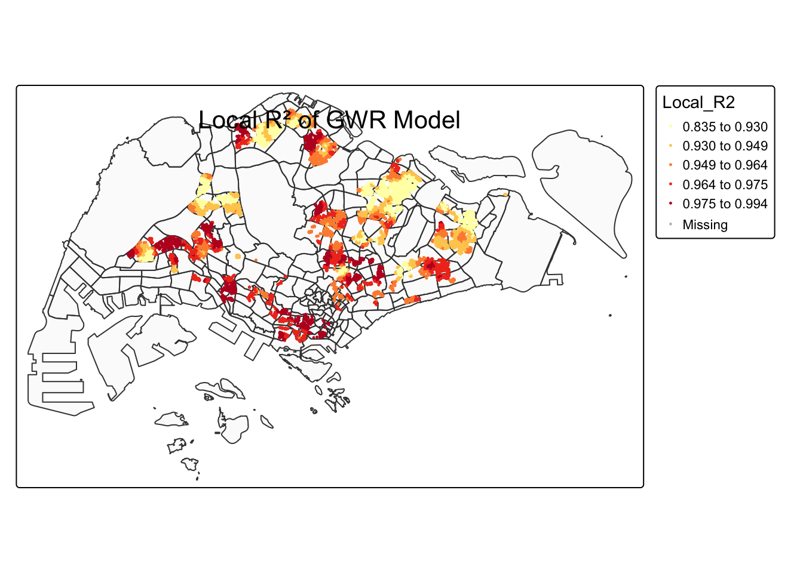
Observations:
The Local R² map shows that the GWR model achieves an excellent fit across most of Singapore, with values commonly above 0.90 and reaching up to 0.99 in several areas. Higher Local R² values are observed around the southern coastal region near the CBD and parts of the east and north, indicating that the selected structural and locational variables explain local price variation well in these neighbourhoods. In contrast, a few fringe locations exhibit slightly lower values (around 0.84–0.90), suggesting the presence of additional local factors not captured in the model. Overall, the Local R² distribution confirms that the GWR model effectively captures spatial variation in HDB resale prices.
5.3.3 Visualising Coefficient Estimates
We visualize the spatial distribution of coefficients for key variables of interest. For each variable, we create maps showing: 1. Coefficient values: The magnitude and direction of the relationship 2. Standard Errors (SE): Reliability of the estimates 3. t-values (TV): Statistical significance
Visualising AREA_SQM Coefficients
# AREA_SQM Coefficient
AREA_SQM_coef <- tm_shape(mpsz) +
tm_polygons(alpha = 0.1) +
tm_shape(hdb_sf.gwr) +
tm_dots(col = "AREA_SQM",
size = 0.1,
style = "quantile",
palette = "RdYlBu",
title = "AREA_SQM Coefficient",
border.col = "gray60",
border.lwd = 0.5)
# AREA_SQM Standard Error
AREA_SQM_SE <- tm_shape(mpsz) +
tm_polygons(alpha = 0.1) +
tm_shape(hdb_sf.gwr) +
tm_dots(col = "AREA_SQM_SE",
size = 0.1,
style = "quantile",
palette = "YlOrRd",
title = "AREA_SQM SE",
border.col = "gray60",
border.lwd = 0.5)
# AREA_SQM t-value
AREA_SQM_TV <- tm_shape(mpsz) +
tm_polygons(alpha = 0.1) +
tm_shape(hdb_sf.gwr) +
tm_dots(col = "AREA_SQM_TV",
size = 0.1,
style = "quantile",
palette = "RdYlGn",
title = "AREA_SQM t-value",
border.col = "gray60",
border.lwd = 0.5)
# maps
# AREA_SQM Coefficient
AREA_SQM_coef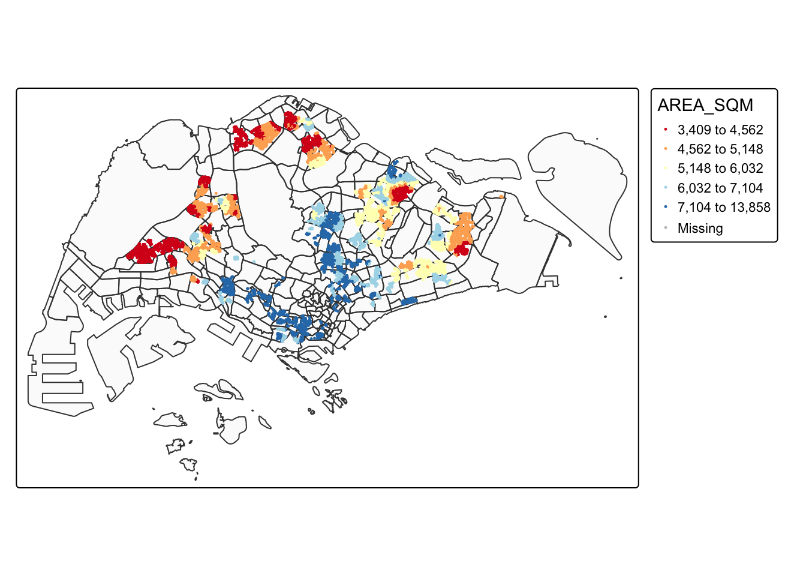
# AREA_SQM Standard Error
AREA_SQM_SE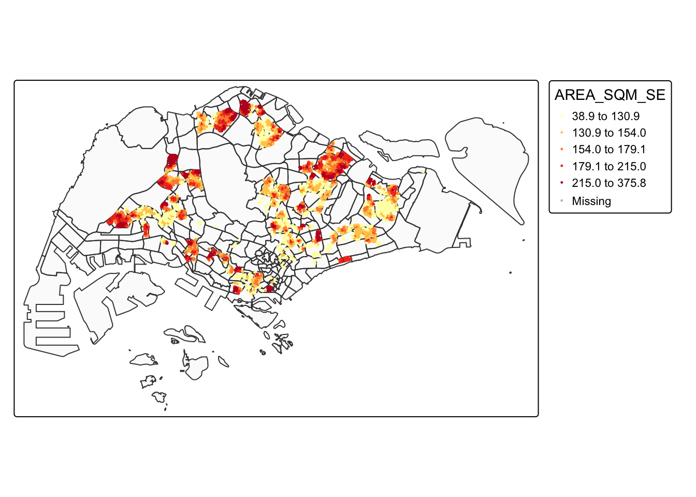
# AREA_SQM t-value
AREA_SQM_TV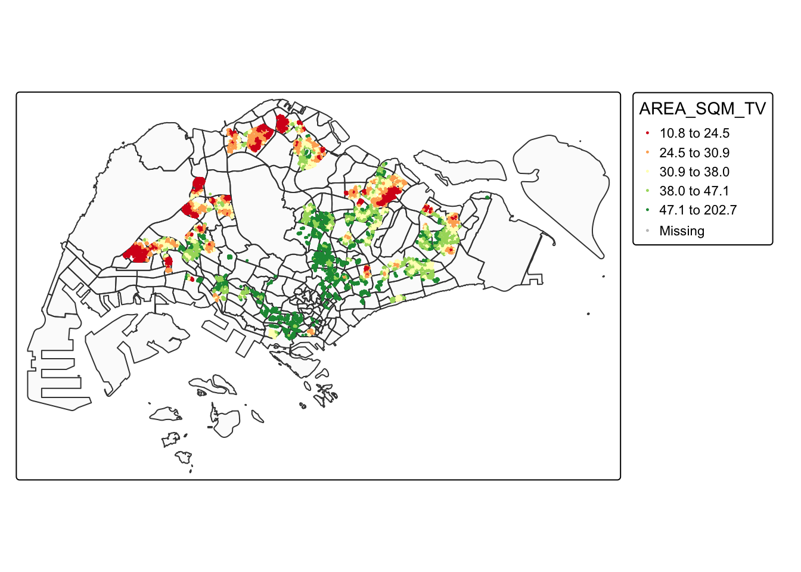
Visualising PROX_MRT Coefficients
# PROX_MRT Coefficient
PROX_MRT_coef <- tm_shape(mpsz) +
tm_polygons(alpha = 0.1) +
tm_shape(hdb_sf.gwr) +
tm_dots(col = "PROX_MRT",
size = 0.1,
style = "quantile",
palette = "RdYlBu",
title = "PROX_MRT Coefficient",
border.col = "gray60",
border.lwd = 0.5)
# PROX_MRT Standard Error
PROX_MRT_SE <- tm_shape(mpsz) +
tm_polygons(alpha = 0.1) +
tm_shape(hdb_sf.gwr) +
tm_dots(col = "PROX_MRT_SE",
size = 0.1,
style = "quantile",
palette = "YlOrRd",
title = "PROX_MRT SE",
border.col = "gray60",
border.lwd = 0.5)
# PROX_MRT t-value
PROX_MRT_TV <- tm_shape(mpsz) +
tm_polygons(alpha = 0.1) +
tm_shape(hdb_sf.gwr) +
tm_dots(col = "PROX_MRT_TV",
size = 0.1,
style = "quantile",
palette = "RdYlGn",
title = "PROX_MRT t-value",
border.col = "gray60",
border.lwd = 0.5)
# maps
# PROX_MRT Coefficient
PROX_MRT_coef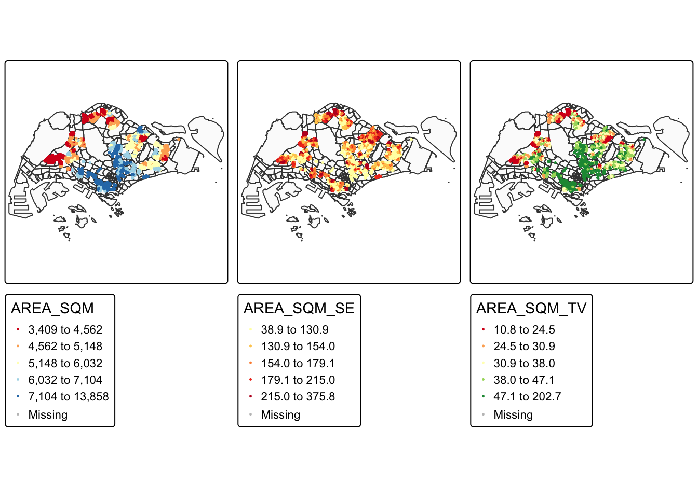
# PROX_MRT Standard Error
PROX_MRT_SE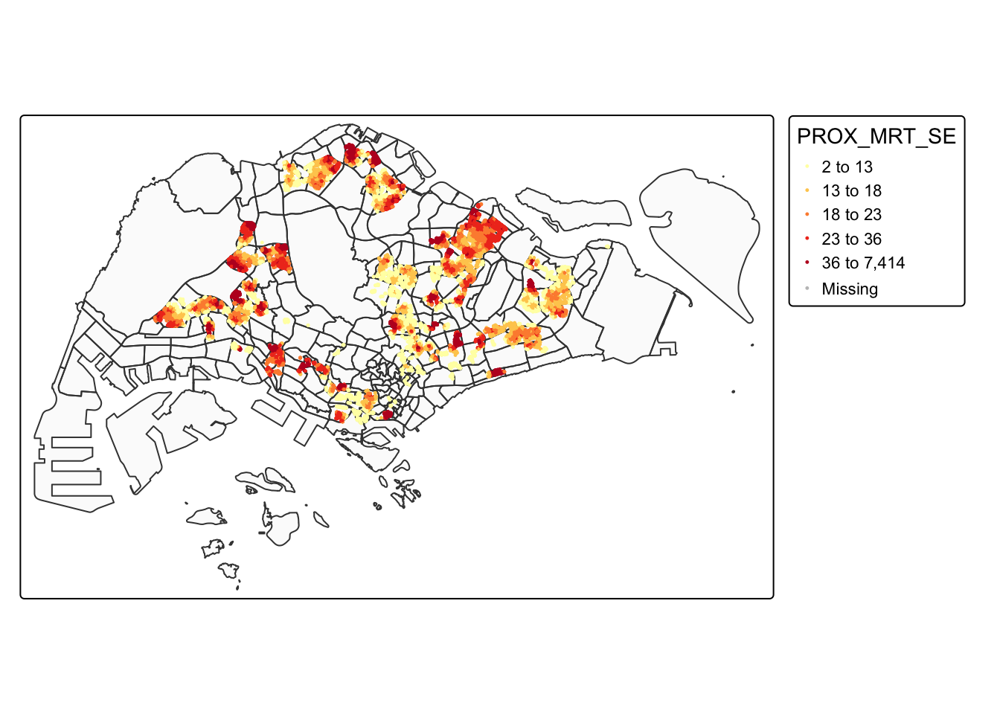
# PROX_MRT t-value
PROX_MRT_TV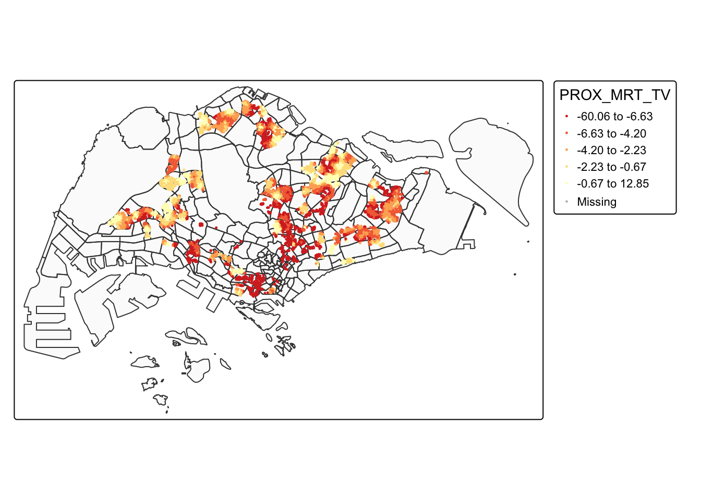
Visualising PROX_CBD Coefficients
# PROX_CBD Coefficient
PROX_CBD_coef <- tm_shape(mpsz) +
tm_polygons(alpha = 0.1) +
tm_shape(hdb_sf.gwr) +
tm_dots(col = "PROX_CBD",
size = 0.1,
style = "quantile",
palette = "RdYlBu",
title = "PROX_CBD Coefficient",
border.col = "gray60",
border.lwd = 0.5)
# PROX_CBD Standard Error
PROX_CBD_SE <- tm_shape(mpsz) +
tm_polygons(alpha = 0.1) +
tm_shape(hdb_sf.gwr) +
tm_dots(col = "PROX_CBD_SE",
size = 0.1,
style = "quantile",
palette = "YlOrRd",
title = "PROX_CBD SE",
border.col = "gray60",
border.lwd = 0.5)
# PROX_CBD t-value
PROX_CBD_TV <- tm_shape(mpsz) +
tm_polygons(alpha = 0.1) +
tm_shape(hdb_sf.gwr) +
tm_dots(col = "PROX_CBD_TV",
size = 0.1,
style = "quantile",
palette = "RdYlGn",
title = "PROX_CBD t-value",
border.col = "gray60",
border.lwd = 0.5)
# maps
# PROX_CBD Coefficient
PROX_CBD_coef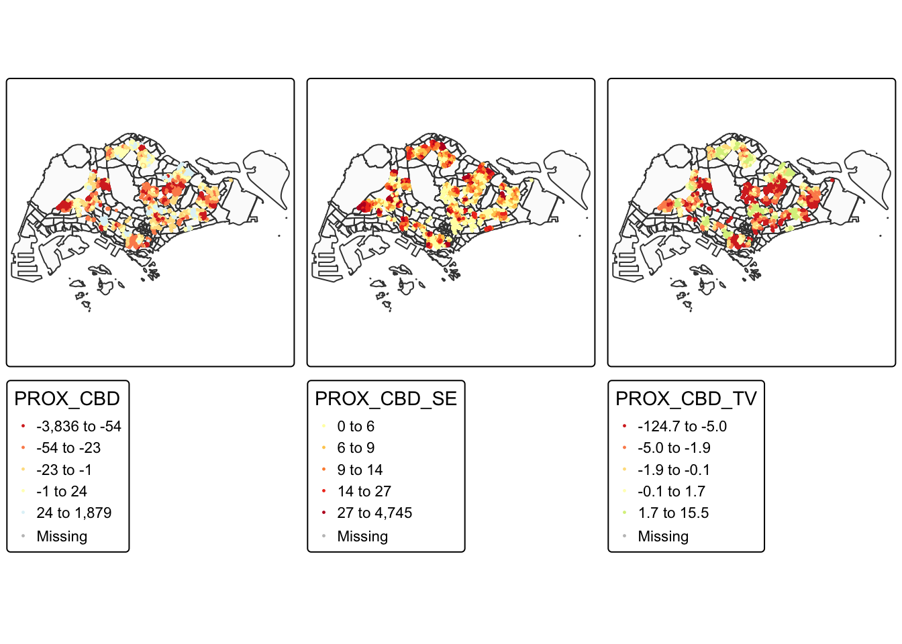
# PROX_CBD Standard Error
PROX_CBD_SE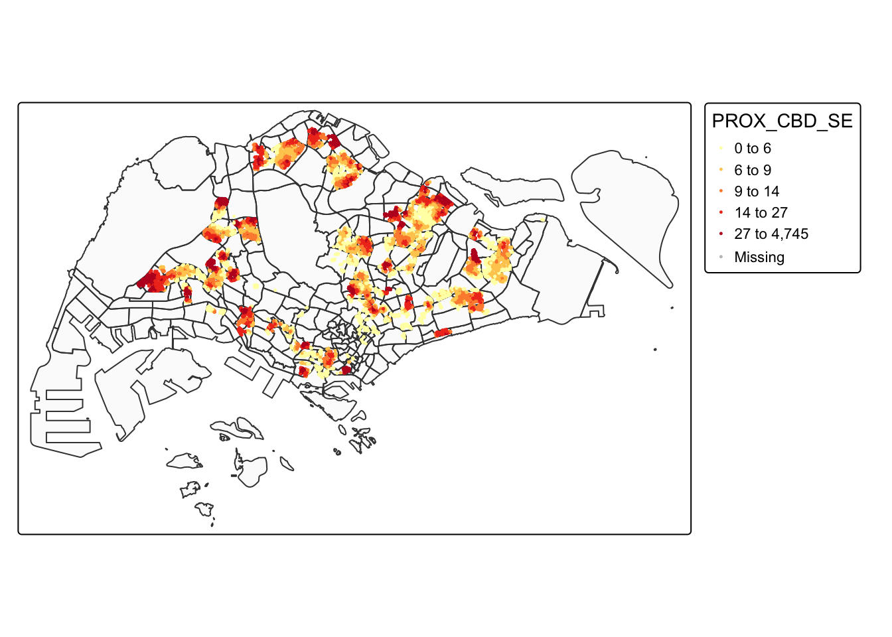
# PROX_CBD t-value
PROX_CBD_TV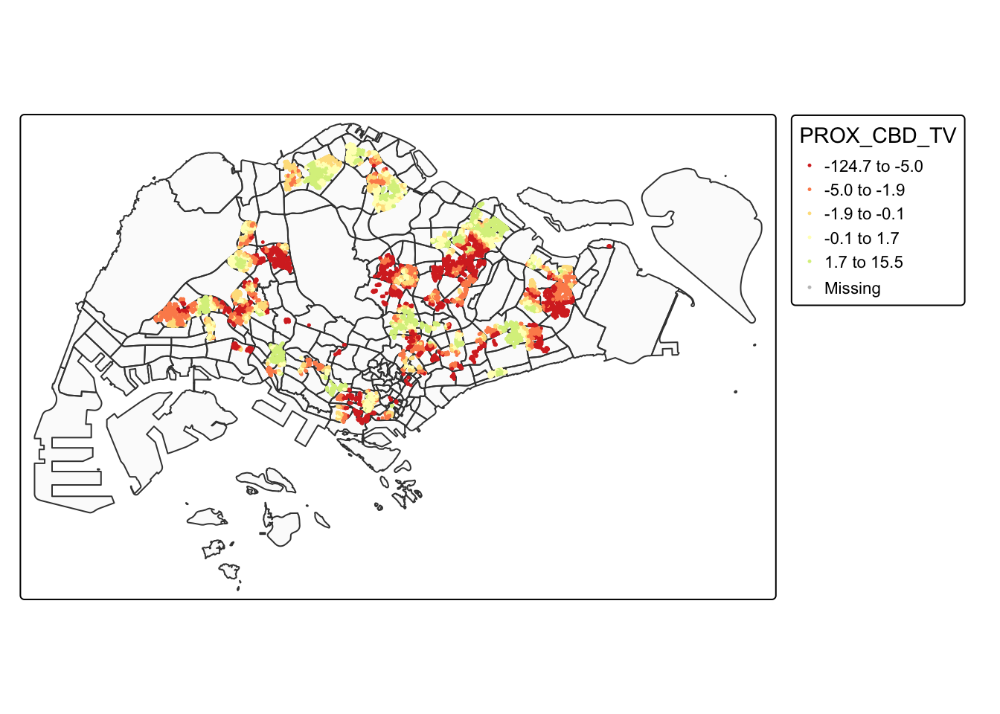
Visualising PROX_PARKS Coefficients
# PROX_PARKS Coefficient
PROX_PARKS_coef <- tm_shape(mpsz) +
tm_polygons(alpha = 0.1) +
tm_shape(hdb_sf.gwr) +
tm_dots(col = "PROX_PARKS",
size = 0.1,
style = "quantile",
palette = "RdYlBu",
title = "PROX_PARKS Coefficient",
border.col = "gray60",
border.lwd = 0.5)
# PROX_PARKS Standard Error
PROX_PARKS_SE <- tm_shape(mpsz) +
tm_polygons(alpha = 0.1) +
tm_shape(hdb_sf.gwr) +
tm_dots(col = "PROX_PARKS_SE",
size = 0.1,
style = "quantile",
palette = "YlOrRd",
title = "PROX_PARKS SE",
border.col = "gray60",
border.lwd = 0.5)
# PROX_PARKS t-value
PROX_PARKS_TV <- tm_shape(mpsz) +
tm_polygons(alpha = 0.1) +
tm_shape(hdb_sf.gwr) +
tm_dots(col = "PROX_PARKS_TV",
size = 0.1,
style = "quantile",
palette = "RdYlGn",
title = "PROX_PARKS t-value",
border.col = "gray60",
border.lwd = 0.5)
# maps
# PROX_PARKS Coefficient
PROX_PARKS_coef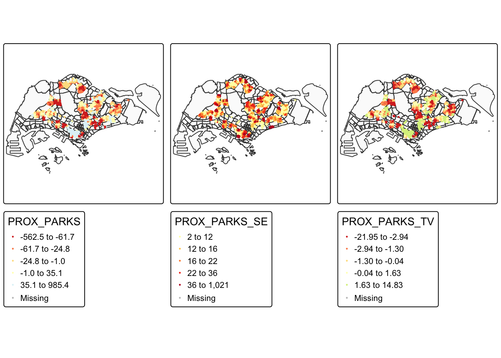
# PROX_PARKS Standard Error
PROX_PARKS_SE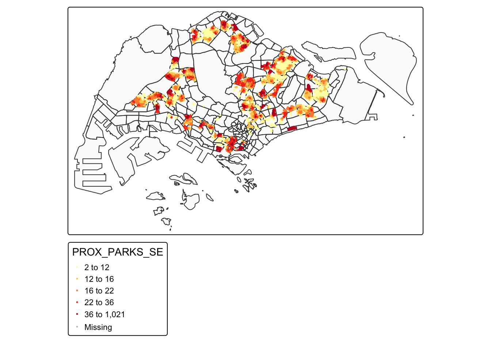
# PROX_PARKS t-value
PROX_PARKS_TV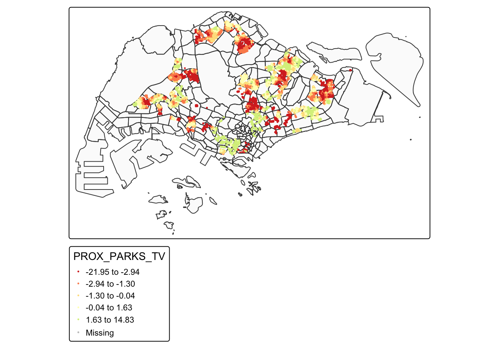
Visualising FLOOR_LEVEL Coefficients
# FLOOR_LEVEL Coefficient
FLOOR_LEVEL_coef <- tm_shape(mpsz) +
tm_polygons(alpha = 0.1) +
tm_shape(hdb_sf.gwr) +
tm_dots(col = "FLOOR_LEVEL",
size = 0.1,
style = "quantile",
palette = "RdYlBu",
title = "FLOOR_LEVEL Coefficient",
border.col = "gray60",
border.lwd = 0.5)
# FLOOR_LEVEL Standard Error
FLOOR_LEVEL_SE <- tm_shape(mpsz) +
tm_polygons(alpha = 0.1) +
tm_shape(hdb_sf.gwr) +
tm_dots(col = "FLOOR_LEVEL_SE",
size = 0.1,
style = "quantile",
palette = "YlOrRd",
title = "FLOOR_LEVEL SE",
border.col = "gray60",
border.lwd = 0.5)
# FLOOR_LEVEL t-value
FLOOR_LEVEL_TV <- tm_shape(mpsz) +
tm_polygons(alpha = 0.1) +
tm_shape(hdb_sf.gwr) +
tm_dots(col = "FLOOR_LEVEL_TV",
size = 0.1,
style = "quantile",
palette = "RdYlGn",
title = "FLOOR_LEVEL t-value",
border.col = "gray60",
border.lwd = 0.5)
#maps
# FLOOR_LEVEL Coefficient
FLOOR_LEVEL_coef
# FLOOR_LEVEL Standard Error
FLOOR_LEVEL_SE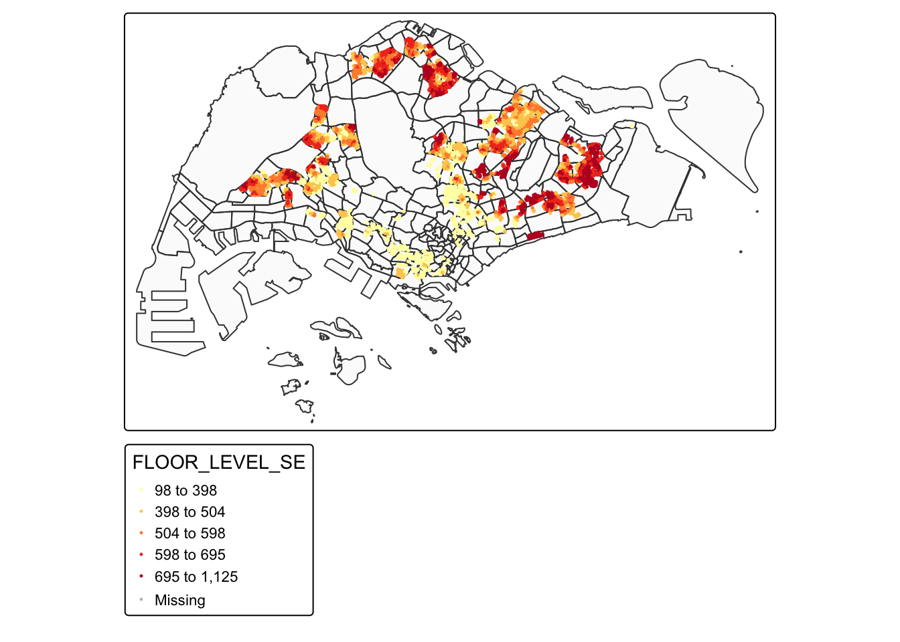
# FLOOR_LEVEL t-value
FLOOR_LEVEL_TV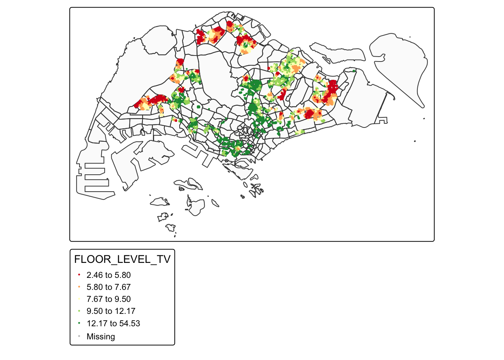
Visualising WITHIN_1KM_PRIMARY Coefficients
# WITHIN_1KM_PRIMARY Coefficient
WITHIN_1KM_PRIMARY_coef <- tm_shape(mpsz) +
tm_polygons(alpha = 0.1) +
tm_shape(hdb_sf.gwr) +
tm_dots(col = "WITHIN_1KM_PRIMARY",
size = 0.1,
style = "quantile",
palette = "RdYlBu",
title = "WITHIN_1KM_PRIMARY Coefficient",
border.col = "gray60",
border.lwd = 0.5)
# WITHIN_1KM_PRIMARY Standard Error
WITHIN_1KM_PRIMARY_SE <- tm_shape(mpsz) +
tm_polygons(alpha = 0.1) +
tm_shape(hdb_sf.gwr) +
tm_dots(col = "WITHIN_1KM_PRIMARY_SE",
size = 0.1,
style = "quantile",
palette = "YlOrRd",
title = "WITHIN_1KM_PRIMARY SE",
border.col = "gray60",
border.lwd = 0.5)
# WITHIN_1KM_PRIMARY t-value
WITHIN_1KM_PRIMARY_TV <- tm_shape(mpsz) +
tm_polygons(alpha = 0.1) +
tm_shape(hdb_sf.gwr) +
tm_dots(col = "WITHIN_1KM_PRIMARY_TV",
size = 0.1,
style = "quantile",
palette = "RdYlGn",
title = "WITHIN_1KM_PRIMARY t-value",
border.col = "gray60",
border.lwd = 0.5)
# maps
# WITHIN_1KM_PRIMARY Coefficient
WITHIN_1KM_PRIMARY_coef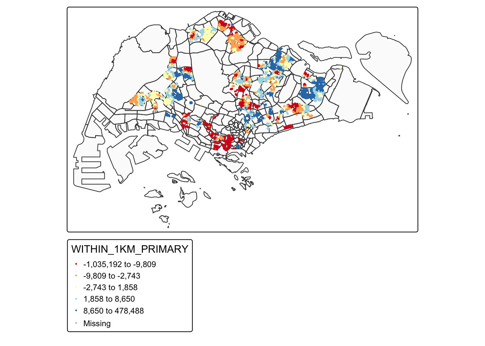
# WITHIN_1KM_PRIMARY Standard Error
WITHIN_1KM_PRIMARY_SE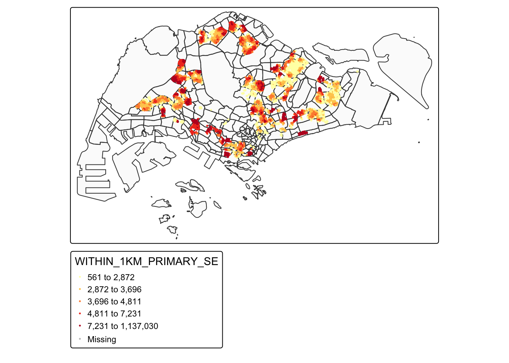
# WITHIN_1KM_PRIMARY t-value
WITHIN_1KM_PRIMARY_TV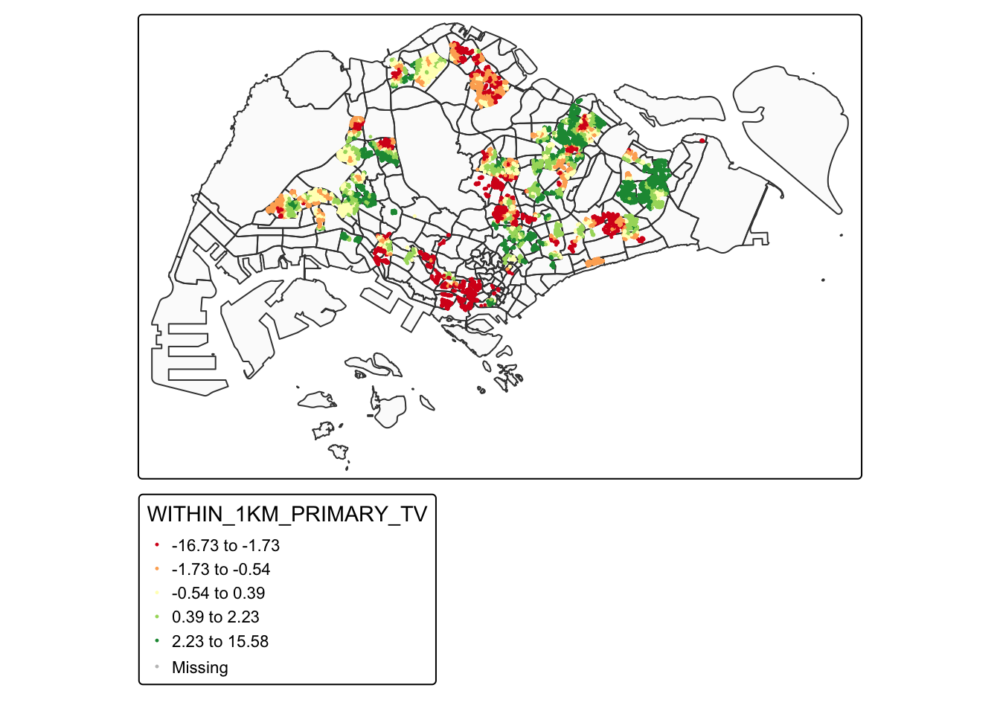
Observations:
AREA_SQM: Positive everywhere, with stronger premiums in central/eastern areas, indicating a higher marginal value of space in more accessible locations.
FLOOR_LEVEL: Consistently positive with strong statistical significance. The high-floor premium is most pronounced in central/eastern regions due to better views and reduced noise.
PROX_MRT: Mostly negative and highly significant, showing that MRT accessibility strongly increases prices—especially along major corridors and near the city centre.
PROX_CBD: Generally negative (closer = higher price), but the effect weakens or reverses in the north and west, where regional centres substitute for CBD access.
PROX_PARKS: Typically negative (closer = higher price), though the effect varies in dense urban areas, suggesting green-space benefits are context-dependent.
WITHIN_1KM_PRIMARY: Highly mixed, with positive and negative effects occurring in similar proportions. School density influences prices differently by neighbourhood, reflecting traffic, congestion, and demand from families.
5.3.4 Integrated Visualization: Key Variable Coefficients
To provide a comprehensive geospatial overview of how different factors influence HDB resale prices across Singapore, we create an integrated map showing coefficient values for key variables. This visualization helps identify spatial patterns and relationships between structural and locational factors.
# Create coefficient maps for key variables
# Structural factors
AREA_SQM_map <- tm_shape(mpsz) +
tm_polygons(alpha = 0.1) +
tm_shape(hdb_sf.gwr) +
tm_dots(col = "AREA_SQM",
size = 0.08,
style = "quantile",
palette = "RdYlBu",
title = "AREA_SQM\nCoefficient",
border.col = "gray60",
border.lwd = 0.3) +
tm_layout(title = "Structural Factor: Area",
title.size = 0.8)
FLOOR_LEVEL_map <- tm_shape(mpsz) +
tm_polygons(alpha = 0.1) +
tm_shape(hdb_sf.gwr) +
tm_dots(col = "FLOOR_LEVEL",
size = 0.08,
style = "quantile",
palette = "RdYlBu",
title = "FLOOR_LEVEL\nCoefficient",
border.col = "gray60",
border.lwd = 0.3) +
tm_layout(title = "Structural Factor: Floor Level",
title.size = 0.8)
# Location factors
PROX_CBD_map <- tm_shape(mpsz) +
tm_polygons(alpha = 0.1) +
tm_shape(hdb_sf.gwr) +
tm_dots(col = "PROX_CBD",
size = 0.08,
style = "quantile",
palette = "RdYlBu",
title = "PROX_CBD\nCoefficient",
border.col = "gray60",
border.lwd = 0.3) +
tm_layout(title = "Location Factor: CBD Proximity",
title.size = 0.8)
PROX_MRT_map <- tm_shape(mpsz) +
tm_polygons(alpha = 0.1) +
tm_shape(hdb_sf.gwr) +
tm_dots(col = "PROX_MRT",
size = 0.08,
style = "quantile",
palette = "RdYlBu",
title = "PROX_MRT\nCoefficient",
border.col = "gray60",
border.lwd = 0.3) +
tm_layout(title = "Location Factor: MRT Proximity",
title.size = 0.8)
PROX_PARKS_map <- tm_shape(mpsz) +
tm_polygons(alpha = 0.1) +
tm_shape(hdb_sf.gwr) +
tm_dots(col = "PROX_PARKS",
size = 0.08,
style = "quantile",
palette = "RdYlBu",
title = "PROX_PARKS\nCoefficient",
border.col = "gray60",
border.lwd = 0.3) +
tm_layout(title = "Location Factor: Parks Proximity",
title.size = 0.8)
WITHIN_1KM_PRIMARY_map <- tm_shape(mpsz) +
tm_polygons(alpha = 0.1) +
tm_shape(hdb_sf.gwr) +
tm_dots(col = "WITHIN_1KM_PRIMARY",
size = 0.08,
style = "quantile",
palette = "RdYlBu",
title = "WITHIN_1KM_PRIMARY\nCoefficient",
border.col = "gray60",
border.lwd = 0.3) +
tm_layout(title = "Location Factor: Primary Schools",
title.size = 0.8)
# Arrange all maps in a comprehensive layout
tmap_arrange(AREA_SQM_map, FLOOR_LEVEL_map,
PROX_CBD_map, PROX_MRT_map,
PROX_PARKS_map, WITHIN_1KM_PRIMARY_map,
asp = 1, ncol = 3, nrow = 2, sync = TRUE)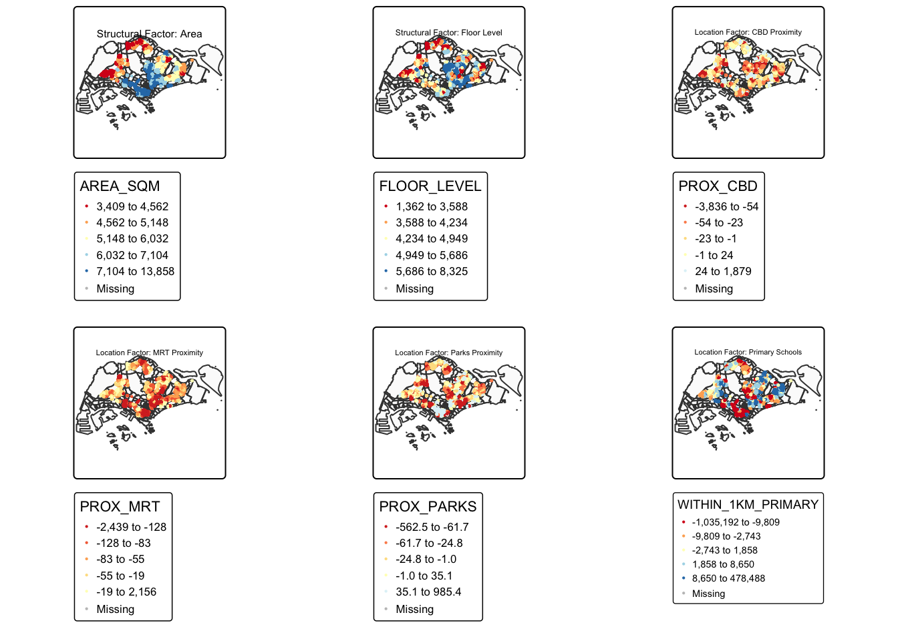
Observations:
The integrated coefficient maps reveal a clear contrast between structural and locational factors in explaining HDB resale prices. Structural variables such as AREA_SQM and FLOOR_LEVEL show consistently positive effects across Singapore, with stronger premiums in central and eastern regions. This indicates that larger flats and higher floors are universally valued, but their marginal benefits increase in more accessible locations.
In contrast, locational variables display substantial spatial variation. Accessibility measures—especially PROX_MRT and PROX_CBD—are predominantly negative, meaning closer proximity tends to increase prices, but the strength of this effect varies across MRT corridors and subregions. Amenities such as parks and primary schools show mixed positive and negative effects, reflecting their context-dependent influence.
Overall, these patterns highlight that structural attributes exert a stable influence island-wide, whereas locational characteristics are highly neighbourhood-specific, underscoring the importance of GWR for capturing spatial heterogeneity in housing markets.
5.3.5 Visualising Coefficient Distributions
To understand the distribution of coefficients across all locations, we create histograms and boxplots for key variables.
# Extract coefficient data
coef_data <- hdb_sf.gwr %>%
st_drop_geometry() %>%
select(AREA_SQM, PROX_MRT, PROX_CBD, PROX_PARKS,
FLOOR_LEVEL, WITHIN_1KM_PRIMARY)
# Create histograms for coefficient distributions
AREA_SQM_hist <- ggplot(coef_data, aes(x = AREA_SQM)) +
geom_histogram(bins = 30, color = "black", fill = "lightblue") +
labs(title = "Distribution of AREA_SQM Coefficients",
x = "Coefficient Value", y = "Frequency") +
theme_minimal()
PROX_MRT_hist <- ggplot(coef_data, aes(x = PROX_MRT)) +
geom_histogram(bins = 30, color = "black", fill = "lightblue") +
labs(title = "Distribution of PROX_MRT Coefficients",
x = "Coefficient Value", y = "Frequency") +
theme_minimal()
PROX_CBD_hist <- ggplot(coef_data, aes(x = PROX_CBD)) +
geom_histogram(bins = 30, color = "black", fill = "lightblue") +
labs(title = "Distribution of PROX_CBD Coefficients",
x = "Coefficient Value", y = "Frequency") +
theme_minimal()
# Arrange histograms
ggarrange(AREA_SQM_hist, PROX_MRT_hist, PROX_CBD_hist,
ncol = 3, nrow = 1)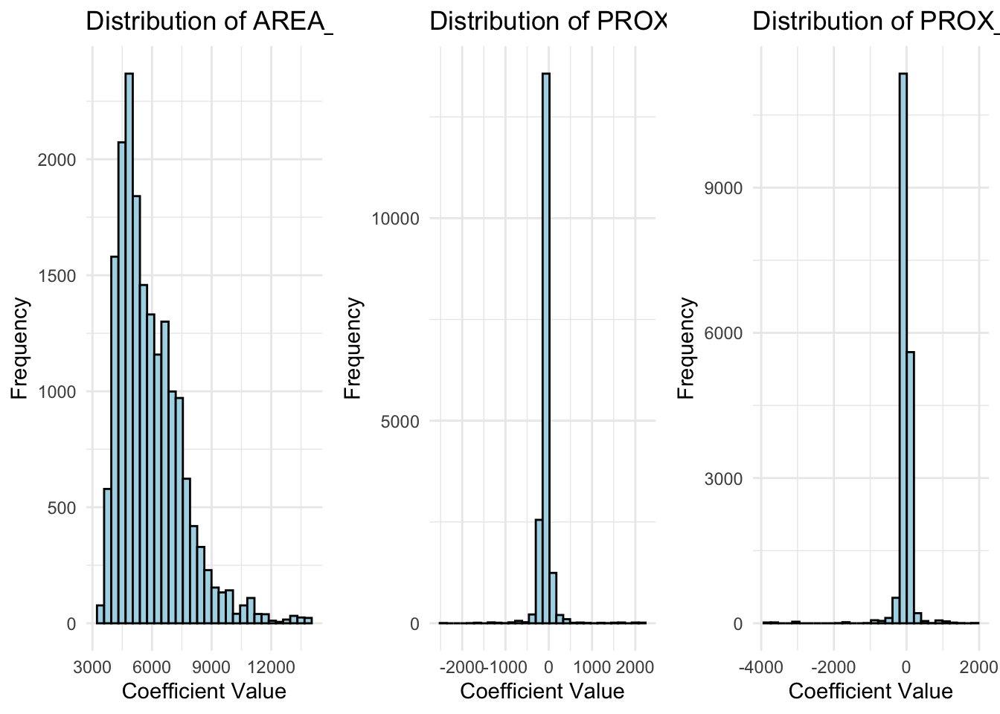
# Create boxplots for coefficient distributions
coef_long <- coef_data %>%
pivot_longer(cols = everything(),
names_to = "Variable",
values_to = "Coefficient")
ggplot(coef_long, aes(x = Variable, y = Coefficient)) +
geom_boxplot(fill = "lightblue", color = "black") +
labs(title = "Distribution of GWR Coefficients by Variable",
x = "Variable", y = "Coefficient Value") +
theme_minimal() +
theme(axis.text.x = element_text(angle = 45, hjust = 1))
Observations:
The coefficient histograms and boxplots reveal distinct distributional patterns across the key explanatory variables. AREA_SQM and FLOOR_LEVEL exhibit unimodal, right-skewed distributions with all coefficients being positive, confirming that larger floor area and higher floors consistently increase resale prices, although the strength of these effects varies across locations. In contrast, locational variables such as PROX_MRT and PROX_CBD have coefficient distributions concentrated around zero but with long negative tails, indicating that proximity to MRT stations and the CBD generally raises prices, yet the magnitude of this premium is highly location-specific.
The distributions for PROX_PARKS and WITHIN_1KM_PRIMARY are more mixed, with coefficients spanning both positive and negative ranges. In particular, WITHIN_1KM_PRIMARY shows extremely wide dispersion and many extreme values, suggesting that primary school density can either strongly increase or decrease prices depending on neighbourhood context (e.g., valued school clusters versus already congested areas). Overall, these coefficient distributions reinforce the conclusion that structural factors have stable, uniformly positive effects, whereas locational factors exhibit much greater variability and context-dependent impacts on HDB resale prices.
5.4 Interpreting GWR Results
The primary objective of this study was to calibrate an explanatory model to identify and evaluate the factors influencing HDB resale prices between 1 January and 30 September 2025. The GWR model achieves this objective with a very high explanatory power (R² = 0.96) and a substantially lower AICc than the global OLS model, indicating that allowing relationships to vary across space provides a much better representation of the 2025 resale market.
From a structural perspective, floor area (AREA_SQM) and floor level (FLOOR_LEVEL) emerge as the most important and stable determinants of resale prices. Their coefficients are positive across all locations and their t-values are consistently high, confirming that larger flats and higher floors command price premiums island-wide, with stronger effects in more central and eastern neighbourhoods. Flat age (AGE) shows a predominantly negative effect (over 80% of locations), indicating that older flats tend to be discounted, although the strength of this discount varies spatially and is partly intertwined with remaining lease and estate characteristics.
Locational factors display much stronger spatial heterogeneity, highlighting the value of a geographically weighted approach. MRT accessibility (PROX_MRT) generally increases prices, with stronger and more significant effects along major MRT corridors and around the city centre, while CBD proximity (PROX_CBD) also tends to raise prices but with weaker and more mixed patterns, especially in towns anchored by strong regional centres. Park proximity (PROX_PARKS) and primary school density (WITHIN_1KM_PRIMARY) exhibit highly mixed effects: in some family- and amenity-oriented neighbourhoods, being near parks or having more schools within 1 km is associated with higher prices, whereas in already congested or noisy environments these features can be associated with lower prices. These mixed patterns suggest that such amenities act as context-dependent factors whose impact is shaped by broader neighbourhood characteristics.
Overall, the GWR results show that structural attributes provide a stable “base value” for HDB resale prices, while locational attributes modulate this base value in different ways across Singapore, creating local price regimes. For practitioners and policymakers, this implies that interventions aimed at enhancing accessibility (e.g., MRT expansion) or neighbourhood amenities (parks, schools) will not have uniform price impacts; their effectiveness depends on local context and existing urban structure. For future work, additional variables capturing internal flat quality, micro-level views, and detailed neighbourhood socio-economic profiles could further refine the model, but the current analysis already provides a robust, spatially explicit explanation of the key drivers of HDB resale prices during the 2025 study period.
References
- Kam, T. S. (2024). R for Geospatial Data Science and Analytics. https://r4gdsa.netlify.app